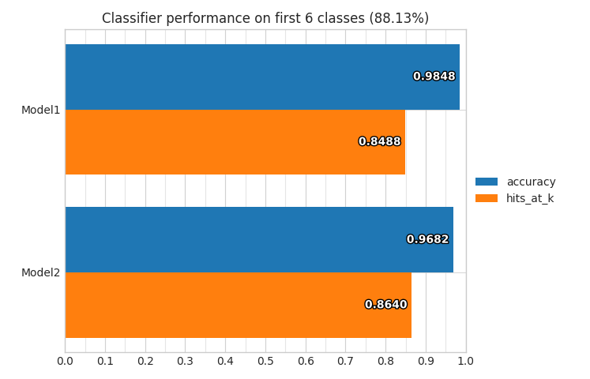
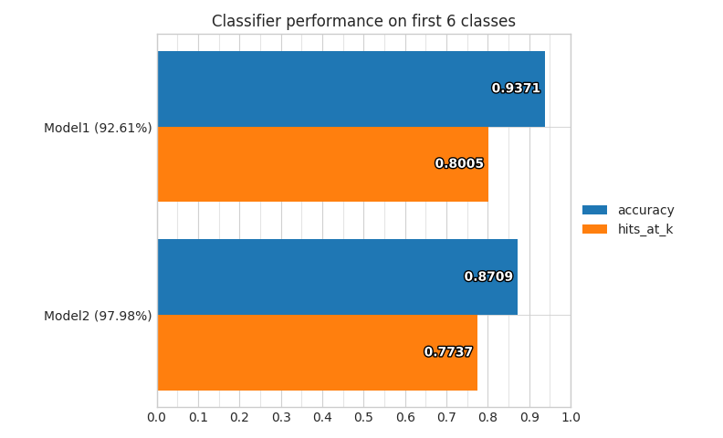
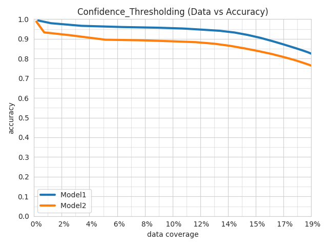
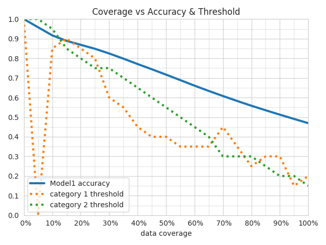
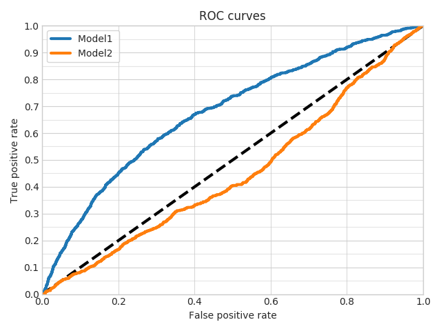
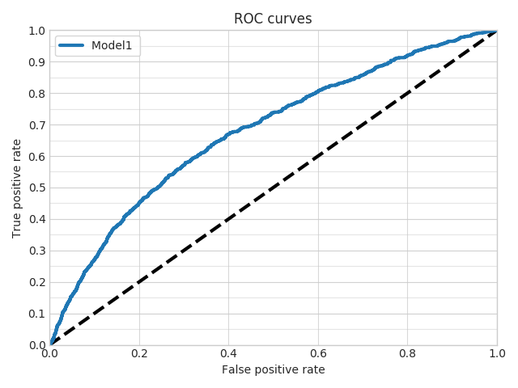
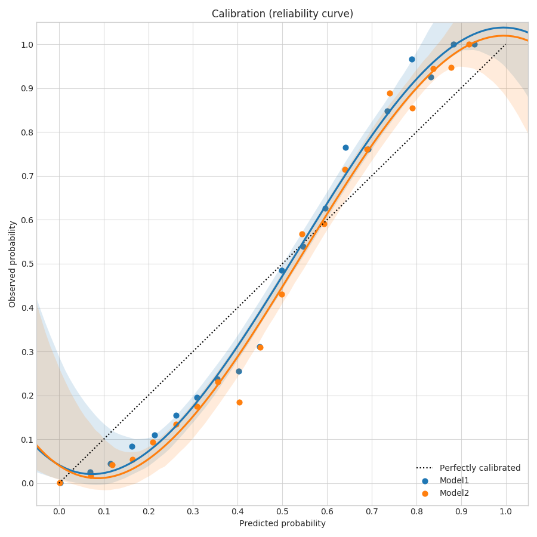
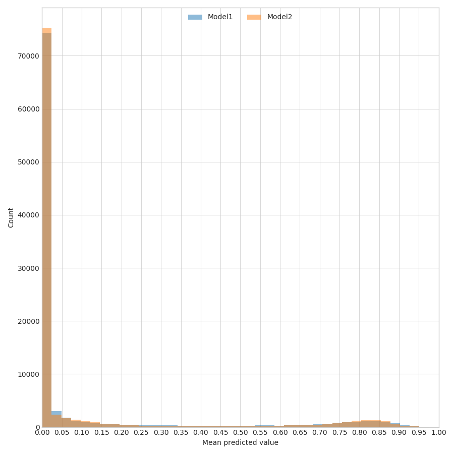
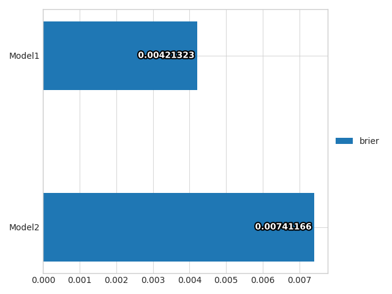
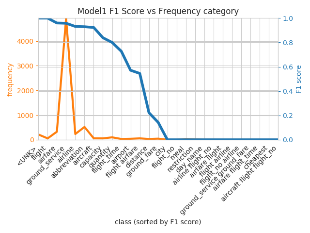

User Guide
Command Line Interface¶
Ludwig provides six command line interface entry points
- train
- predict
- experiment
- visualize
- collect_weights
- collect_activations
They are described in detail below.
train¶
This command lets you train a model from your data. You can call it with:
ludwig train [options]
or with
python -m ludwig.train [options]
from within Ludwig's main directory.
These are the available arguments:
usage: ludwig train [options]
This script trains a model.
optional arguments:
-h, --help show this help message and exit
--output_directory OUTPUT_DIRECTORY
directory that contains the results
--experiment_name EXPERIMENT_NAME
experiment name
--model_name MODEL_NAME
name for the model
--data_csv DATA_CSV input data CSV file. If it has a split column, it will
be used for splitting (0: train, 1: validation, 2:
test), otherwise the dataset will be randomly split
--data_train_csv DATA_TRAIN_CSV
input train data CSV file
--data_validation_csv DATA_VALIDATION_CSV
input validation data CSV file
--data_test_csv DATA_TEST_CSV
input test data CSV file
--data_hdf5 DATA_HDF5
input data HDF5 file. It is an intermediate preprocess
version of the input CSV created the first time a CSV
file is used in the same directory with the same name
and a hdf5 extension
--data_train_hdf5 DATA_TRAIN_HDF5
input train data HDF5 file. It is an intermediate
preprocess version of the input CSV created the first
time a CSV file is used in the same directory with the
same name and a hdf5 extension
--data_validation_hdf5 DATA_VALIDATION_HDF5
input validation data HDF5 file. It is an intermediate
preprocess version of the input CSV created the first
time a CSV file is used in the same directory with the
same name and a hdf5 extension
--data_test_hdf5 DATA_TEST_HDF5
input test data HDF5 file. It is an intermediate
preprocess version of the input CSV created the first
time a CSV file is used in the same directory with the
same name and a hdf5 extension
--train_set_metadata_json TRAIN_SET_METADATA_JSON
input metadata JSON file. It is an intermediate
preprocess file containing the mappings of the input
CSV created the first time a CSV file is used in the
same directory with the same name and a json extension
-sspi, --skip_save_processed_input
skips saving intermediate HDF5 and JSON files
-md MODEL_DEFINITION, --model_definition MODEL_DEFINITION
model definition
-mdf MODEL_DEFINITION_FILE, --model_definition_file MODEL_DEFINITION_FILE
YAML file describing the model. Ignores
--model_hyperparameters
-mlp MODEL_LOAD_PATH, --model_load_path MODEL_LOAD_PATH
path of a pretrained model to load as initialization
-mrp MODEL_RESUME_PATH, --model_resume_path MODEL_RESUME_PATH
path of a the model directory to resume training of
-ssm, --skip_save_model
disables saving weights each time the model imrpoves. By
default Ludwig saves weights after each epoch the
validation measure imrpvoes, but if the model is
really big that can be time consuming if you do not
want to keep the weights and just find out what
performance can a model get with a set of
hyperparameters, use this parameter to skip it.
-ssp, --skip_save_progress
disables saving weights after each epoch. By default
ludwig saves weights after each epoch for enabling
resuming of training, but if the model is really big
that can be time consuming and will save twice as much
space, use this parameter to skip it.
-ssl, --skip_save_log
disables saving TensorBoard logs. By default Ludwig
saves logs for the TensorBoard, but if it is not
needed turning it off can slightly increase the
overall speed.
-rs RANDOM_SEED, --random_seed RANDOM_SEED
a random seed that is going to be used anywhere there
is a call to a random number generator: data
splitting, parameter initialization and training set
shuffling
-g GPUS [GPUS ...], --gpus GPUS [GPUS ...]
list of gpus to use
-gf GPU_FRACTION, --gpu_fraction GPU_FRACTION
fraction of gpu memory to initialize the process with
-uh, --use_horovod uses horovod for distributed training
-dbg, --debug enables debugging mode
-l {critical,error,warning,info,debug,notset}, --logging_level {critical,error,warning,info,debug,notset}
the level of logging to use
When Ludwig trains a model it creates two intermediate files, one HDF5 and one JSON. The HDF5 file contains the data mapped to numpy ndarrays, while the JSON file contains the mappings from the values in the tensors to their original labels.
For instance, for a categorical feature with 3 possible values, the HDF5 file will contain integers from 0 to 3 (with 0 being a <UNK> category), while the JSON file will contain a idx2str list containing all tokens ([<UNK>, label_1, label_2, label_3]), a str2idx dictionary ({"<UNK>": 0, "label_1": 1, "label_2": 2, "label_3": 3}) and a str2freq dictionary ({"<UNK>": 0, "label_1": 93, "label_2": 55, "label_3": 24}).
The reason to have those intermediate files is two-fold: on one hand, if you are going to train your model again Ludwig will try to load them instead of recomputing all tensors, which saves a consistent amount of time, and on the other hand when you want to use your model to predict, data has to be mapped to tensors in exactly the same way it was mapped during training, so you'll be required to load the JSON metadata file in the predict command.
The way this works is: the first time you provide a CSV (--data_csv), the HDF5 and JSON files are created, from the second time on Ludwig will load them instead of the CSV even if you specify the CSV (it looks in the same directory for files names in the same way but with a different extension), finally you can directly specify the HDF5 and JSON files (--data_hdf5 and --metadata_json).
As the mapping from raw data to tensors depends on the type of feature that you specify in your model definition, if you change type (for instance from sequential to text) you also have to redo the preprocessing, which is achieved by deleting the HDF5 and JSON files.
Alternatively you can skip saving the HDF5 and JSON files specifying --skip_save_processed_input.
Splitting between train, validation and test set can be done in several ways. This allows for a few possible input data scenarios:
-
one single CSV file is provided (
-data_csv). In this case if the csv contains asplitcolumn with values0for training,1for validation and2for test, this split will be used. If you want to ignore the split column and perform a random split, use aforce_splitargument in the model definition. In the case when there is no split column, a random70-20-10split will be performed. You can set the percentages and specify if you want stratified sampling in the model definition preprocessing section. -
you can provide separate train, validation and test CSVs (
--data_train_csv,--data_validation_csv,--data_test_csv). -
the HDF5 and JSON file indications specified in the case of a single CSV file apply also in the multiple files case (
--data_train_hdf5,--data_validation_hdf5,--data_test_hdf5), with the only difference that you need to specify only one JSON file (--metadata_json) instead of three. The validation set is optional, but if absent the training wil continue until the end of the training epochs, while when there's a validation set the default behavior is to perform early stopping after the validation measure does not improve for a a certain amount of epochs. The test set is optional too.
Other optional arguments are --output_directory, --experiment_name and --model name.
By default the output directory is ./results.
That directory will contain a directory named [experiment_name]_[model_name]_0 if model name and experiment name are specified.
If the same combination of experiment and model name is used again, the integer at the end of the name wil be increased.
If neither of them is specified the directory will be named run_0.
The directory will contain
description.json- a file containing a description of the training process with all the information to reproduce it.training_statistics.jsonwhich contains records of all measures and losses for each epoch.model- a directory containing model hyperparameters, weights, checkpoints and logs (for TensorBoard).
The model definition can be provided either as a string (--model_definition) or as YAML file (--model_definition_file).
Details on how to write your model definition are provided in the Model Definition section.
During training Ludwig saves two sets of weights for the model, one that is the weights at the end of the epoch where the best performance on the validation measure was achieved and one that is the weights at the end of the latest epoch. The reason for keeping the second set is to be able to resume training in case the training process gets interrupted somehow.
To resume training using the latest weights and the whole history of progress so far you have to specify the --model_resume_path argument.
You can avoid saving the latest weights and the overall progress so far by using the argument --skip_save_progress, but you will not be able to resume it afterwards.
Another available option is to load a previously trained model as an initialization for a new training process.
In this case Ludwig will start a new training process, without knowing any progress of the previous model, no training statistics, nor the number of epochs the model has been trained on so far.
It's not resuming training, just initializing training with a previously trained model with the same model definition, and it is accomplished through the --model_load_path argument.
You can specify a random sed to be used by the python environment, python random package, numpy and TensorFlow with the --random_seed argument.
This is useful for reproducibility.
Be aware that due to asynchronicity in the TensorFlow GPU execution, when training on GPU results may not be reproducible.
You can manage which GPUs on your machine are used with the --gpus argument, which accepts a string identical to the format of CUDA_VISIBLE_DEVICES environment variable, namely a list of integers separated by comma.
You can also specify the fraction of the GPU memory that will be initially assigned to TensorFlow with --gpu_fraction.
By default it is 1.0, but you can set it, for instance, to 0.2 to use only 1/5 of the available memory.
If TensorFlow will need more GPU memory it will try to increase this amount.
Finally the --logging_level argument lets you set the amount of logging that you want to see during training and the --debug argument turns on TensorFlow's tfdbg. Be careful when doing so, as it will help in catching errors, in particular infs and NaNs but it will consume much more memory.
Example:
ludwig train --data_csv reuters-allcats.csv --model_definition "{input_features: [{name: text, type: text, encoder: parallel_cnn, level: word}], output_features: [{name: class, type: category}]}"
predict¶
This command lets you use a previously trained model to predict on new data. You can call it with:
ludwig predict [options]
or with
python -m ludwig.predict [options]
from within Ludwig's main directory.
These are the available arguments:
usage: ludwig predict [options]
This script loads a pretrained model and uses it to predict.
optional arguments:
-h, --help show this help message and exit
--data_csv DATA_CSV input data CSV file. If it has a split column, it will
be used for splitting (0: train, 1: validation, 2:
test), otherwise the dataset will be randomly split
--data_hdf5 DATA_HDF5
input data HDF5 file. It is an intermediate preprocess
version of the input CSV created the first time a CSV
file is used in the same directory with the same name
and a hdf5 extension
--train_set_metadata_json TRAIN_SET_METADATA_JSON
input metadata JSON file. It is an intermediate
preprocess file containing the mappings of the input
CSV created the first time a CSV file is used in the
same directory with the same name and a json extension
-s {training,validation,test,full}, --split {training,validation,test,full}
the split to test the model on
-m MODEL_PATH, --model_path MODEL_PATH
model to load
-od OUTPUT_DIRECTORY, --output_directory OUTPUT_DIRECTORY
directory that contains the results
-ssuo, --skip_save_unprocessed_output
skips saving intermediate NPY output files
-bs BATCH_SIZE, --batch_size BATCH_SIZE
size of batches
-op, --only_predictions
skip metrics calculation
-g GPUS, --gpus GPUS list of gpu to use
-gf GPU_FRACTION, --gpu_fraction GPU_FRACTION
fraction of gpu memory to initialize the process with
-uh, --use_horovod uses horovod for distributed training
-dbg, --debug enables debugging mode
-l {critical,error,warning,info,debug,notset}, --logging_level {critical,error,warning,info,debug,notset}
the level of logging to use
The same distinction between CSV files and HDF5 / JSON files explained in the train section also applies here.
In either case, the JSON metadata file obtained during training is needed in order to map the new data into tensors.
If the new data contains a split column, you can specify which split to use to calculate the predictions with the --split argument. By default it's full which means all the splits will be used.
A model to load is needed, and you can specify its path with the --model_path argument.
If you trained a model previously and got the results in, for instance, ./results/experiment_run_0, you have to specify ./results/experiment_run_0/model for using it to predict.
You can specify an output directory with the argument --output-directory, by default it will be ./result_0, with increasing numbers if a directory with the same name is present.
The directory will contain a prediction CSV file and a probability CSV file for each output feature, together with raw NPY files containing raw tensors and a predict_statistics.json file containing all prediction statistics.
By specifying the argument --only_prediction you will not get the statistics. This parameter is needed in the case your data does not contain ground truth output values, and thus computing the prediction statistics would be impossible.
If you receive an error regarding a missing output feature column in your data, you probably forgot to specify this argument.
You can moreover specify not to save the raw NPY output files with the argument skip_save_unprocessed_output.
A specific batch size for speeding up the prediction can be specified using the argument --batch_size.
Finally the --logging_level, --debug and --gpus related arguments behave exactly like described in the train command section.
Example:
ludwig predict --data_csv reuters-allcats.csv --model_path results/experiment_run_0/model/
experiment¶
This command combines training and prediction into a single handy command. You can call it with:
ludwig experiment [options]
or with
python -m ludwig.experiment [options]
from within Ludwig's main directory.
These are the available arguments:
usage: ludwig experiment [options]
This script trains and tests a model.
optional arguments:
-h, --help show this help message and exit
--output_directory OUTPUT_DIRECTORY
directory that contains the results
--experiment_name EXPERIMENT_NAME
experiment name
--model_name MODEL_NAME
name for the model
--data_csv DATA_CSV input data CSV file. If it has a split column, it will
be used for splitting (0: train, 1: validation, 2:
test), otherwise the dataset will be randomly split
--data_train_csv DATA_TRAIN_CSV
input train data CSV file
--data_validation_csv DATA_VALIDATION_CSV
input validation data CSV file
--data_test_csv DATA_TEST_CSV
input test data CSV file
--data_hdf5 DATA_HDF5
input data HDF5 file. It is an intermediate preprocess
version of the input CSV created the first time a CSV
file is used in the same directory with the same name
and a hdf5 extension
--data_train_hdf5 DATA_TRAIN_HDF5
input train data HDF5 file. It is an intermediate
preprocess version of the input CSV created the first
time a CSV file is used in the same directory with the
same name and a hdf5 extension
--data_validation_hdf5 DATA_VALIDATION_HDF5
input validation data HDF5 file. It is an intermediate
preprocess version of the input CSV created the first
time a CSV file is used in the same directory with the
same name and a hdf5 extension
--data_test_hdf5 DATA_TEST_HDF5
input test data HDF5 file. It is an intermediate
preprocess version of the input CSV created the first
time a CSV file is used in the same directory with the
same name and a hdf5 extension
--train_set_metadata_json TRAIN_SET_METADATA_JSON
input train set metadata JSON file. It is an intermediate
preprocess file containing the mappings of the input
CSV created the first time a CSV file is used in the
same directory with the same name and a json extension
-sspi, --skip_save_processed_input
skips saving intermediate HDF5 and JSON files
-ssuo, --skip_save_unprocessed_output
skips saving intermediate NPY output files
-md MODEL_DEFINITION, --model_definition MODEL_DEFINITION
model definition
-mdf MODEL_DEFINITION_FILE, --model_definition_file MODEL_DEFINITION_FILE
YAML file describing the model. Ignores
--model_hyperparameters
-mlp MODEL_LOAD_PATH, --model_load_path MODEL_LOAD_PATH
path of a pretrained model to load as initialization
-mrp MODEL_RESUME_PATH, --model_resume_path MODEL_RESUME_PATH
path of a the model directory to resume training of
-ssp SKIP_SAVE_PROGRESS_WEIGHTS, --skip_save_progress SKIP_SAVE_PROGRESS_WEIGHTS
disables saving weights after each epoch. By default
Ludwig saves weights after each epoch for enabling
resuming of training, but if the model is really big
that can be time consuming and will use twice as much
storage space, use this parameter to skip it.
-rs RANDOM_SEED, --random_seed RANDOM_SEED
a random seed that is going to be used anywhere there
is a call to a random number generator: data
splitting, parameter initialization and training set
shuffling
-g GPUS [GPUS ...], --gpus GPUS [GPUS ...]
list of gpus to use
-gf GPU_FRACTION, --gpu_fraction GPU_FRACTION
fraction of gpu memory to initialize the process with
-dbg, --debug enables debugging mode
-l {critical,error,warning,info,debug,notset}, --logging_level {critical,error,warning,info,debug,notset}
the level of logging to use
The parameters combine parameters from both train and predict so please refer to those sections for an in depth explanation. The output directory will contain the outputs both commands produce.
Example:
ludwig experiment --data_csv reuters-allcats.csv --model_definition "{input_features: [{name: text, type: text, encoder: parallel_cnn, level: word}], output_features: [{name: class, type: category}]}"
visualize¶
This command lets you visualize training and prediction statistics, alongside with comparing different models performances and predictions. You can call it with:
ludwig visualize [options]
or with
python -m ludwig.visualize [options]
from within Ludwig's main directory.
These are the available arguments:
usage: ludwig visualize [options]
This script analyzes results and shows some nice plots.
optional arguments:
-h, --help show this help message and exit
-r RAW_DATA, --raw_data RAW_DATA
raw data file
-g GROUND_TRUTH, --ground_truth GROUND_TRUTH
ground truth file
-gm GROUND_TRUTH_METADATA, --ground_truth_metadata GROUND_TRUTH_METADATA
input metadata JSON file
-v {compare_performance,compare_classifiers_performance_from_prob,compare_classifiers_performance_from_pred,compare_classifiers_performance_changing_k,compare_classifiers_performance_subset,compare_classifiers_predictions,compare_classifiers_predictions_distribution,confidence_thresholding,confidence_thresholding_2thresholds_3d,confidence_thresholding_data_vs_acc,confidence_thresholding_2thresholds_2d,confidence_thresholding_data_vs_acc_subset,confidence_thresholding_data_vs_acc_subset_per_class,binary_threshold_vs_metric,roc_curves,roc_curves_from_test_statistics,data_vs_acc_subset,data_vs_acc_subset_per_class,calibration_1_vs_all,calibration_multiclass,confusion_matrix,compare_classifiers_multiclass_multimetric,frequency_vs_f1,learning_curves}, --visualization {compare_performance,compare_classifiers_performance_from_prob,compare_classifiers_performance_from_pred,compare_classifiers_performance_changing_k,compare_classifiers_performance_subset,compare_classifiers_predictions,compare_classifiers_predictions_distribution,confidence_thresholding,confidence_thresholding_2thresholds_3d,confidence_thresholding_data_vs_acc,confidence_thresholding_2thresholds_2d,confidence_thresholding_data_vs_acc_subset,confidence_thresholding_data_vs_acc_subset_per_class,binary_threshold_vs_metric,roc_curves,roc_curves_from_test_statistics,data_vs_acc_subset,data_vs_acc_subset_per_class,calibration_1_vs_all,calibration_multiclass,confusion_matrix,compare_classifiers_multiclass_multimetric,frequency_vs_f1,learning_curves}
type of visualization
-f FIELD, --field FIELD
field containing ground truth
-tf THRESHOLD_FIELDS [THRESHOLD_FIELDS ...], --threshold_fields THRESHOLD_FIELDS [THRESHOLD_FIELDS ...]
fields for 2d threshold
-pred PREDICTIONS [PREDICTIONS ...], --predictions PREDICTIONS [PREDICTIONS ...]
predictions files
-prob PROBABILITIES [PROBABILITIES ...], --probabilities PROBABILITIES [PROBABILITIES ...]
probabilities files
-tes TRAINING_STATS [TRAINING_STATS ...], --training_statistics TRAINING_STATS [TRAINING_STATS ...]
training stats files
-trs TEST_STATS [TEST_STATS ...], --test_statistics TEST_STATS [TEST_STATS ...]
test stats files
-alg ALGORITHMS [ALGORITHMS ...], --algorithms ALGORITHMS [ALGORITHMS ...]
names of the algorithms (for better graphs)
-tn TOP_N_CLASSES [TOP_N_CLASSES ...], --top_n_classes TOP_N_CLASSES [TOP_N_CLASSES ...]
number of classes to plot
-k TOP_K, --top_k TOP_K
number of elements in the ranklist to consider
-ll LABELS_LIMIT, --labels_limit LABELS_LIMIT
maximum numbers of labels. If labels in dataset are
higher than this number, "rare" label
-ss {ground_truth,predictions}, --subset {ground_truth,predictions}
type of subset filtering
-n, --normalize normalize rows in confusion matrix
-m METRICS [METRICS ...], --metrics METRICS [METRICS ...]
metrics to dispay in threshold_vs_metric
-pl POSITIVE_LABEL, --positive_label POSITIVE_LABEL
label of the positive class for the roc curve
-l {critical,error,warning,info,debug,notset}, --logging_level {critical,error,warning,info,debug,notset}
the level of logging to use
As the --visualization parameters suggests, there is a vast number of visualizations readily available.
Each of them requires a different subset of this command's arguments, so they will be described one by one in the Visualizations section.
collect_weights¶
This command lets you load a pre-trained model and collect the tensors with a specific name in order to save them in a NPY format. This may be useful in order to visualize the learned weights (for instance collecting embedding matrices) and for some post-hoc analyses. You can call it with:
ludwig collect_weights [options]
or with
python -m ludwig.collect weights [options]
from within Ludwig's main directory.
These are the available arguments:
usage: ludwig collect_weights [options]
This script loads a pretrained model and uses it collect weights.
optional arguments:
-h, --help show this help message and exit
-m MODEL_PATH, --model_path MODEL_PATH
model to load
-t TENSORS [TENSORS ...], --tensors TENSORS [TENSORS ...]
tensors to collect
-od OUTPUT_DIRECTORY, --output_directory OUTPUT_DIRECTORY
directory that contains the results
-dbg, --debug enables debugging mode
-l {critical,error,warning,info,debug,notset}, --logging_level {critical,error,warning,info,debug,notset}
the level of logging to use
The three most important arguments are --model_path where you have to specify the path of the model to load, --tensors that lets you specify a list of tensor names in the TensorFlow graph that contain the weights you want to collect, and finally --output_directory that lets you specify where the NPY files (one for each tensor name specified) will be saved.
In order to figure out the names fo the tensors containing the weights you want to collect, the best way is to inspect the graph of the model with TensorBoard.
tensorboard --logdir /path/to/model/log
collect_activations¶
This command lets you load a pre-trained model and input data and collects the values of activations contained in tensors with a specific name in order to save them in a NPY format. This may be useful in order to visualize the activations (for instance collecting last layer's activations as embeddings representations of the input datapoint) and for some post-hoc analyses. You can call it with:
ludwig collect_activations [options]
or with
python -m ludwig.collect activations [options]
from within Ludwig's main directory.
These are the available arguments:
usage: ludwig collect_activations [options]
This script loads a pretrained model and uses it collect tensors for each
datapoint in the dataset.
optional arguments:
-h, --help show this help message and exit
--data_csv DATA_CSV input data CSV file
--data_hdf5 DATA_HDF5
input data HDF5 file
-s {training,validation,test,full}, --split {training,validation,test,full}
the split to test the model on
-m MODEL_PATH, --model_path MODEL_PATH
model to load
-t TENSORS [TENSORS ..], --tensors TENSORS [TENSORS ..]
tensors to collect
-od OUTPUT_DIRECTORY, --output_directory OUTPUT_DIRECTORY
directory that contains the results
-bs BATCH_SIZE, --batch_size BATCH_SIZE
size of batches
-g GPUS, --gpus GPUS list of gpu to use
-gf GPU_FRACTION, --gpu_fraction GPU_FRACTION
fraction of gpu memory to initialize the process with
-dbg, --debug enables debugging mode
-l {critical,error,warning,info,debug,notset}, --logging_level {critical,error,warning,info,debug,notset}
the level of logging to use
The data related and runtime related arguments (GPUs, batch size, etc.) are the same used in predict, you can refer to that section for an explanation.
The collect specific arguments --model_path, --tensors and --output_directory are the same used in collect_weights, you can refer to that section for an explanation.
In order to figure out the names fo the tensors containing the activations you want to collect, the best way is to inspect the graph of the model with TensorBoard.
tensorboard --logdir /path/to/model/log
Data Preprocessing¶
Ludwig data preprocessing maps raw data coming in CSV format into an HDF5 file containing tensors and a JSON file containing mappings from strings to tensors when needed.
This mapping is performed when a CSV is provided as input and both HDF5 and JSON files are saved in the same directory as the input CSV, unless the argument --skip_save_processed_input is used (both in train and experiment commands).
The reason to save those files is both to provide a cache and avoid performing the preprocessing again (as, depepnding on the type of features involved, it could be time consuming) and to provide the needed mappings to be able to map unseen data into tensors.
The preprocessing process is personalizable to fit the specifics of your data format, but the basic assumption is always that your CSV files contains one row for each datapoint and one column for each feature (either input or output), and that you are able to determine the type of that column among the ones supported by Ludwig. The reason for that is that each data type is mapped into tensors in a different way and expects the content to be formatted in a specific way. Different datatypes may have different formatters that format the values of a cell.
For instance the value of a cell of a sequence feature column by default is managed by a space formatter, that splits the content of the value into a list of strings using space.
| before formatter | after formatter |
|---|---|
| "token3 token4 token2" | [token3, token4, token2] |
| "token3 token1" | [token3, token1] |
Then a list idx2str and two dictionaries str2idx and str2freq are created containing all the tokens in all the lists obtained by splitting all the rows of the column and an integer id is assigned to each of them (in order of frequency).
{ "column_name": { "idx2str": [ "<PAD>", "<UNK>", "token3", "token2", "token4", "token1" ], "str2idx": { "<PAD>": 0, "<UNK>": 1, "token3": 2, "token2": 3, "token4": 4, "token1": 5 }, "str2freq": { "<PAD>": 0, "<UNK>": 0, "token3": 2, "token2": 1, "token4": 1, "token1": 1 } } }
Finally a numpy matrix is created with sizes n x l where n is the number of rows in the column and l is the minimum of the longest tokenized list and a max_lenght parameter that can be set.
All sequences shorter than l are padded on the right (but this behavior may also be modified through a parameter).
| after formatter | numpy matrix |
|---|---|
| [token3, token4, token2] | 2 4 3 |
| [token3, token1] | 2 5 0 |
The final result matrix is saved in the HDF5 the name of the original column in the CSV as key, while the mapping from token to integer ID (and its inverse mapping) is saved in the JSON file.
Each datatype is preprocessed in a different way, using different parameters and different formatters. Details on how to set those parameters for each feature type and for each specific feature will be described in the Model Definition - Preprocessing section.
Binary features are directly transformed into a binary valued vector of length n (where n is the size of the dataset) and added to HDF5 with a key that reflects the name of column in the CSV.
No additional information about them is available in the JSON metadata file.
Numerical features are directly transformed into a float valued vector of length n (where n is the size of the dataset) and added to HDF5 with a key that reflects the name of column in the CSV.
No additional information about them is available in the JSON metadata file.
Category features are transformed into into an integer valued vector of size n (where n is the size of the dataset) and added to HDF5 with a key that reflects the name of column in the CSV.
The way categories are mapped into integers consists in first collecting a dictionary of all the different category strings present in the column of the CSV, then rank them by frequency and then assign them an increasing integer ID from the most frequent to the most rare (with 0 being assigned to a <UNK> token).
The column name is added to the JSON file, with an associated dictionary containing
1. the mapping from integer to string (idx2str)
2. the mapping from string to id (str2idx)
3. the mapping from string to frequency (str2freq)
4. the size of the set of all tokens (vocab_size)
4. additional preprocessing information (by default how to fill missing values and what token to use to fill missing values)
Set features are transformed into into a binary (int8 actually) valued matrix of size n x l (where n is the size of the dataset and l is the minimum of the size of the biggest set and a max_size parameter) and added to HDF5 with a key that reflects the name of column in the CSV.
The way sets are mapped into integers consists in first using a formatter to map from strings to sequences of set items (by default this is done by splitting on spaces).
Then a a dictionary of all the different set item strings present in the column of the CSV is collected, then they are ranked by frequency and an increasing integer ID is assigned to them from the most frequent to the most rare (with 0 being assigned to <PAD> used for padding and 1 assigned to <UNK> item).
The column name is added to the JSON file, with an associated dictionary containing
1. the mapping from integer to string (idx2str)
2. the mapping from string to id (str2idx)
3. the mapping from string to frequency (str2freq)
4. the maximum size of all sets (max_set_size)
5. additional preprocessing information (by default how to fill missing values and what token to use to fill missing values)
Bag features are treated in the same way of set features, with the only difference being that the matrix had float values (frequencies).
Sequence features are transformed into into an integer valued matrix of size n x l (where n is the size of the dataset and l is the minimum of the length of the longest sequence and a sequence_length_limit parameter) and added to HDF5 with a key that reflects the name of column in the CSV.
The way sets are mapped into integers consists in first using a formatter to map from strings to sequences of tokens (by default this is done by splitting on spaces).
Then a a dictionary of all the different token strings present in the column of the CSV is collected, then they are ranked by frequency and an increasing integer ID is assigned to them from the most frequent to the most rare (with 0 being assigned to <PAD> used for padding and 1 assigned to <UNK> item).
The column name is added to the JSON file, with an associated dictionary containing
1. the mapping from integer to string (idx2str)
2. the mapping from string to id (str2idx)
3. the mapping from string to frequency (str2freq)
4. the maximum length of all sequences (sequence_length_limit)
5. additional preprocessing information (by default how to fill missing values and what token to use to fill missing values)
Text features are treated in the same way of sequence features, with a couple differences.
Two different formatting/splitting happen, one that splits at every character and one that uses a spaCy based tokenizer (and removes stopwords) are used, and two different key are added to the HDF5 file, one containing the matrix of characters and one containing the matrix of words.
The same thing happens in the JSON file, where there are dictionaries for mapping characters to integers (and the inverse) and words to integers (and their inverse).
In the model definition you are able to specify which level of representation to use, if the character level or the word level.
Timeseries features are treated in the same way of sequence features, with the only difference being that the matrix in the HDF5 file does not have integer values, but float values.
Moreover, there is no need for any mapping in the JSON file.
Image features are transformed into into a int8 valued tensor of size n x h x w x c (where n is the size of the dataset and h x w is a specific resizing of the image that can be set, and c is the number of color channels) and added to HDF5 with a key that reflects the name of column in the CSV.
The column name is added to the JSON file, with an associated dictionary containing preprocessing information about the sizes of the resizing.
CSV Format¶
Ludwig uses Pandas under the hood to read the CSV files. Pandas tries to automatically identify the separator (generally ',') from the data.
We are using '\' as the default escape character. For example, if ',' is the column separator and one of your data columns has a ',' in it, Pandas would fail to load the data properly.
To handle such cases, we expect your data columns to be escaped with backslashes (replace ',' in the data with '\\,')
Data Postprocessing¶
The JSON file obtained from preprocessing is used also for postprocessing: Ludwig models return output predictions and, depending on their datatype they are mapped back into the original space.
Numerical and timeseries are returned as they are, while category, set, sequence, and text features output integers, those integers are mapped back into the original tokens / names using the idx2str in the JSON file.
When you run experiment or predict you will find both a CSV file for each output containing the mapped predictions, a probability CSV file containing the probability of that prediction, a probabilities CSV file containing the probabilities for all alternatives (for instance, the probabilities of all the categories in case of a categorical feature).
You will also find the unmapped NPY files.
If you don't need them you can use the --skip_save_unprocessed_output argument.
Model Definition¶
The model definition is the core of Ludwig.
It is a dictionary that contains all the information needed to build and train a Ludwig model.
It mixes ease of use, by means of reasonable defaults, with flexibility, by means of detailed control over the parameters of your model.
It is provided to both experiment and train commands either as a string (--model_definition) or as a file (--model_definition_file).
The string or the content of the file will be parsed by PyYAML into a dictionary in memory, so any style of YAML accepted by the parser is considered to be valid, so both multiline and oneline formats are accepted.
For instance a list of dictionaries can be written both as
mylist: [{name: item1, score: 2}, {name: item2, score: 1}, {name: item3, score: 4}]
or as:
mylist: - name: item1 score: 2 - name: item2 score: 1 - name: item3 score: 4
The structure of the model definition file is a dictionary with five keys:
input_features: [] combiner: {} output_features: [] training: {} preprocessing: {}
Only input_features and output_features are required, the other three fields have default values, but you are free to modify them.
Input features¶
The input_features list contains a list of dictionaries, each of them containing two required fields name and type.
name is the name of the feature and is the same name of the column of the CSV input file, type is one of the supported datatypes.
Input features may have different ways to be encoded and the parameter to decide it is encoder.
All the other parameters you specify in an input feature will be passed as parameters to the function that build the encoder, and each encoder can have different parameters.
For instance a sequence feature can be encoded by a stacked_cnn or by and rnn, but only the stacked_cnn will accept the parameter num_filters while only the rnn will accept the parameter bidirectional.
A list of all the encoders available for all the datatypes alongside with the description of all parameters will be provided in the datatype-specific sections. Some datatypes have only one type of encoder, so you are not required to specify it.
The role of the encoders is to map inputs into tensors, usually vectors in the case of datatype without a temporal / sequential aspect, matrices in case there is a temporal / sequential aspect or higher rank tensors in case there is a spatial or a spatio-temporal aspect to the input data.
Different configurations of the same encoder may return a tensor with different rank, for instance a sequential encoder may return a vector of size h that is either the final vector of a sequence or the result of pooling over the sequence length, or it can return a matrix of size l x h where l is the length of the sequence and h is the hidden dimension if you specify the pooling reduce operation (reduce_output) to be null.
For the sake of simplicity you can imagine the output to be a vector in most of the cases, but there is a reduce_output parameter one can specify to change the default behavior.
An additional feature that ludwig provides is the option to have tied weights between different encoders.
For instance if my model takes two sentences as input and return the probability of their entailment, I may want to encode both sentences with the same encoder.
The way to do it is by specifying the tied-weights parameter of the second feature you define to be the name of the first feature you defined.
input_features: - name: sentence1 type: text - name: sentence2 type: text tied_weights: sentence1
If you specify a name of an input feature that has not been defined yet, it will result in an error. Also, in order to be able to have tied weights, all encoder parameters have to be identical between the two input features.
Combiner¶
Combiners are part of the model that take all the outputs of the different input features and combine them in a single representation that is passed to the outputs.
You can specify which one to use in the combiner section of the model definition.
Different combiners implement different combination logic, but the default one concat just concatenates all outputs of input feature encoders and optionally passes the concatenation through fully connected layers, with the output of the last layer being forwarded to the outputs decoders.
+-----------+ |Input | |Feature 1 +-+ +-----------+ | +---------+ +-----------+ | +------+ |Fully | |... +--->Concat+--->Connected+-> +-----------+ | +------+ |Layers | +-----------+ | +---------+ |Input +-+ |Feature N | +-----------+
For the sake of simplicity you can imagine the both inputs and outputs are vectors in most of the cases, but there are reduce_input and reduce_output parameters to specify to change the default behavior.
Output Features¶
The output_features list has the same structure of the input_features list: it is a list of dictionaries containing a name and a type.
They represent outputs / targets that you want your model to predict.
In most machine learning tasks you want to predict only one target variable, but in Ludwig you are allowed to specify as many outputs as you want and they are going to be optimized in a multi-task fashion, using a weighted sum of their losses as a combined loss to optimize.
Instead of having encoders, output features have decoders, but most of them have only one decoder so you don't have to specify it.
Decoders take the output of the combiner as input, process it further, for instance passing it through fully connected layers, and finally predict values and compute a loss and some measures (depending on the datatype different losses and measures apply).
Decoders have additional parameters, in particular loss that allows you to specify a different loss to optimize for this specific decoder, for instance numerical features support both mean_squared_error and mean_absolute_error as losses.
Details about the available decoders and losses alongside with the description of all parameters will be provided in the datatype-specific sections.
For the sake of simplicity you can imagine the input coming from the combiner to be a vector in most of the cases, but there is a reduce_input parameter one can specify to change the default behavior.
Output Features Dependencies¶
An additional feature that Ludwig provides is the concept of dependency between output_features.
You can specify a list of output features as dependencies when you write the dictionary of a specific feature.
At model building time Ludwig checks that no cyclic dependency exists.
If you do so Ludwig will concatenate all the final representations before the prediction of those output features to the original input of the decoder.
The reason is that if different output features have a causal dependency, knowing which prediction has been made for one can help making the prediction of the other.
For instance if two output features are one coarse grained category and one fine-grained category that are in a hierarchical structure with each other, knowing the prediction made for coarse grained restricts the possible categories to predict for the fine-grained. In this case the following model definition structure can be used:
output_features: - name: coarse_class type: category num_fc_layers: 2 fc_size: 64 - name: fine_class type: category dependencies: - coarse_class num_fc_layers: 1 fc_size: 64
Assuming the input coming from the combiner has hidden dimension h 128, there are two fully connected layers that return a vector with hidden size 64 at the end of the coarse_class decoder (that vector will be used for the final layer before projecting in the output coarse_class space)
In the decoder of fine_class, the 64 dimensional vector of coarse_class will be concatenated to the combiner output vector, making a vector of hidden size 192 that will be passed through a fully connected layer and the 64 dimensional output will be used for the final layer before projecting in the output class space of the fine_class.
Training¶
The training section of the model definition lets you specify some parameters of the training process, like for instance the number of epochs or the learning rate.
These are the available training parameters:
batch_size(default128): size of the batch used for training the model.epochs(default100): number of epochs the training process will run for.early_stop(default5): if there's a validation set, number of epochs of patience without an improvement on the validation measure before the training is stopped.optimizer(default{type: adam, beta1: 0.9, beta2: 0.999, epsilon: 1e-08}): which optimizer to use with the relative parameters. The available optimizers are:sgd(orstochastic_gradient_descent,gd,gradient_descent, they are all the same),adam,adadelta,adagrad,adagradda,momentum,ftrl,proximalgd,proximaladagrad,rmsprop. To know their parameters check TensorFlow's optimizer documentation.learning_rate(default0.001): the learning rate to use.decay(defaultfalse): if to use exponential decay of the learning rate or not.decay_rate(default0.96): the rate of the exponential learning rate decay.decay_steps(default10000): the number of steps of the exponential learning rate decay.staircase(defaultfalse): decays the learning rate at discrete intervals.regularization_lambda(default0): the lambda parameter used for adding a l2 regularization loss to the overall loss.dropout_rate(default0.0): the probability to drop neurons in dropout. Thedropout_rateis used throughout the whole model, but to decide which parts of the model will use it, use thedropoutboolean parameter available in each encoder, combiner and decoder.reduce_learning_rate_on_plateau(default0): if there's a validation set, how many times to reduce the learning rate when a plateau of validation measure is reached.reduce_learning_rate_on_plateau_patience(default5): if there's a validation set, number of epochs of patience without an improvement on the validation measure before reducing the learning rate.reduce_learning_rate_on_plateau_rate(default0.5): if there's a validation set, the reduction rate of the learning rate.increase_batch_size_on_plateau(default0): if there's a validation set, how many times to increase the batch size when a plateau of validation measure is reached.increase_batch_size_on_plateau_patience(default5): if there's a validation set, number of epochs of patience without an improvement on the validation measure before increasing the learning rate.increase_batch_size_on_plateau_rate(default2): if there's a validation set, the increase rate of the batch size.increase_batch_size_on_plateau_max(default512): if there's a validation set, the maximum value of batch size.validation_field(defaultcombined): when there is more than one output feature, which one to use for computing if there was an improvement on validation. The measure to use to determine if there was an improvement can be set with thevalidation_measureparameter. Different datatypes have different available measures, refer to the datatype-specific section for more details.combinedindicates the use the combination of all features. For instance the combination ofcombinedandlossas measure uses a decrease in the combined loss of all output features to check for improvement on validation, whilecombinedandaccuracyconsiders on how many datapoints the predictions for all output features were correct (but consider that for some features, for instancenumericthere is no accuracy measure, so you should useaccuracyonly if all your output features have an accuracy measure).validation_measure:(defaultaccuracy): the measure to use to determine if there was an improvement. The measure is considered for the output feature specified invalidation_field. Different datatypes have different available measures, refer to the datatype-specific section for more details.bucketing_field(defaultnull): when notnull, when creating batches, instead of shuffling randomly, the length along the last dimension of the matrix of the specified input feature is used for bucketing datapoints and then randomly shuffled datapoints from the same bin are sampled. Padding is trimmed to the longest datapoint in the batch. The specified feature should be either asequenceortextfeature and the encoder encoding it has to bernn. When used, bucketing improves speed ofrnnencoding up to 1.5x, depending on the length distribution of the inputs.
Preprocessing¶
The preprocessing section of the model definition makes it possible to specify datatype specific parameters to perform data preprocessing.
The preprocessing dictionary contains one key of each datatype, but you have to specify only the ones that apply to your case, the other ones will be kept as defaults.
Moreover, the preprocessing dictionary contains parameters related to how to split the data that are not feature specific.
force_split(defaultfalse): iftruethesplitcolumn in the CSV data file is ignored and the dataset is randomly split. Iffalsethesplitcolumn is used if available.split_probabilities(default[0.7, 0.2, 0.1]): the proportion of the CSV data to end up in training, validation and test. The three values have to sum up to one.stratify(defaultnull): ifnullthe split is random, otherwise you can specify the name of acategoryfeature and the split will be stratified on that feature.
Example preprocessing dictionary (showing default values):
preprocessing: force_split: false split_probabilities: [0.7, 0.2, 0.1] stratify: null category: {...} sequence: {...} text: {...} ...
The details about the preprocessing parameters that each datatype accepts will be provided in the datatype-specific sections.
It is important to point out that different features within the same datatype may require different preprocessing. For instance a document classification model may have two text input features, one for the title of the document and one for the body.
As the length of the title is much shorter than the length of the body, the parameter word_length_limit should be set to 10 for the title and 2000 for the body, but both of them share the same parameter most_common_words with value 10000.
The way to do this is adding a preprocessing key inside the title input_feature dictionary and one in the body input feature dictionary containing the desired parameter and value.
The model definition will look like:
preprocessing: text: most_common_word: 10000 input_features: - name: title type: text preprocessing: word_length_limit: 20 - name: body type: text preprocessing: word_length_limit: 2000
Binary Features¶
Binary Features Preprocessing¶
Binary features are directly transformed into a binary valued vector of length n (where n is the size of the dataset) and added to HDF5 with a key that reflects the name of column in the CSV.
No additional information about them is available in the JSON metadata file.
The parameters available for preprocessing are
missing_value_strategy(defaultfill_with_const): what strategy to follow when there's a missing value in a binary column. The value should be one offill_with_const(replaces the missing value with a specific value specified with thefill_valueparameter),fill_with_mode(replaces the missing values with the most frequent value in the column),fill_with_mean(replaces the missing values with the mean of the values in the column),backfill(replaces the missing values with the next valid value).fill_value(default0): the value to replace the missing values with in case themissing_value_strategyisfill-value.
Binary Input Features and Encoders¶
Binary features have no encoder, the raw binary values coming from the input placeholders are just returned as outputs.
By consequence there are no encoding parameters.
Inputs are of size b while outputs are of size b x 1 where b is the batch size.
Example binary feature entry in the output features list:
name: binary_csv_column_name type: binary
Binary Output Features and Decoders¶
Binary features can be used when a binary classification needs to be performed or when the output is a single probability. There is only one decoder available for binary features and it is a (potentially empty) stack of fully connected layers, followed by a projection into a single number followed by a sigmoid function.
These are the available parameters of a binary output feature
reduce_inputs(defaultsum): defines how to reduce an input that is not a vector, but a matrix or a higher order tensor, on the first dimension 9second if you count the batch dimension). Available values are:sum,meanoravg,max,concat(concatenates along the first dimension),last(returns the last vector of the first dimension).dependencies(default[]): the output features this one is dependent on. For a detailed explanation refer to Output Features Dependencies.reduce_dependencies(defaultsum): defines how to reduce the output of a dependent feature that is not a vector, but a matrix or a higher order tensor, on the first dimension 9second if you count the batch dimension). Available values are:sum,meanoravg,max,concat(concatenates along the first dimension),last(returns the last vector of the first dimension).loss(default{type: cross_entropy, confidence_penalty: 0, robust_lambda: 0}): is a dictionary containing a losstypeand its hyperparameters. The only available losstypeiscross_entropy(cross entropy), and the two optional parameters areconfidence_penalty(an additional term that penalizes too confident predictions by adding aa * (max_entropy - entropy) / max_entropyterm to the loss, where a is the value of this parameter) androbust_lambda(replaces the loss with(1 - robust_lambda) * loss + robust_lambda / 2which is useful in case of noisy labels).
These are the available parameters of a binary output feature decoder
fc_layers(defaultnull): it is a list of dictionaries containing the parameters of all the fully connected layers. The length of the list determines the number of stacked fully connected layers and the content of each dictionary determines the parameters for a specific layer. The available parameters for each layer are:fc_size,norm,activation,dropout,initializerandregularize. If any of those values is missing from the dictionary, the default one specified as a parameter of the decoder will be used instead.num_fc_layers(default 0): this is the number of stacked fully connected layers that the input to the feature passes through. Their output is projected in the feature's output space.fc_size(default256): if afc_sizeis not already specified infc_layersthis is the defaultfc_sizethat will be used for each layer. It indicates the size of the output of a fully connected layer.activation(defaultrelu): if anactivationis not already specified infc_layersthis is the defaultactivationthat will be used for each layer. It indicates the activation function applied to the output.norm(defaultnull): if anormis not already specified infc_layersthis is the defaultnormthat will be used for each layer. It indicates the norm of the output and it can benull,batchorlayer.dropout(defaultfalse): determines if there should be a dropout layer after each layer.initializer(defaultnull): the initializer to use. Ifnull, the default initialized of each variable is used (glorot_uniformin most cases). Options are:constant,identity,zeros,ones,orthogonal,normal,uniform,truncated_normal,variance_scaling,glorot_normal,glorot_uniform,xavier_normal,xavier_uniform,he_normal,he_uniform,lecun_normal,lecun_uniform. Alternatively it is possible to specify a dictionary with a keytypethat identifies the type of initializer and other keys for its parameters, e.g.{type: normal, mean: 0, stddev: 0}. To know the parameters of each initializer, please refer to TensorFlow's documentation.regularize(defaulttrue): iftruethe wights of the layers are added to the set of weights that get regularized by a regularization loss (if theregularization_lambdaintrainingis greater than 0).threshold(default0.5): The threshold above (greater or equal) which the predicted output of the sigmoid will be mapped to 1.
Example binary feature entry (with default parameters) in the output features list:
name: binary_csv_column_name type: binary reduce_inputs: sum dependencies: [] reduce_dependencies: sum loss: type: cross_entropy confidence_penalty: 0 robust_lambda: 0 fc_layers: null num_fc_layers: 0 fc_size: 256 activation: relu norm: null dropout: false initializer: null regularize: true threshold: 0.5
Binary Features Measures¶
The only measures that are calculated every epoch and are available for binary features are the accuracy and the loss itself.
You can set either of them as validation_measure in the training section of the model definition if you set the validation_field to be the name of a binary feature.
Numerical Features¶
Numerical Features Preprocessing¶
Numerical features are directly transformed into a float valued vector of length n (where n is the size of the dataset) and added to HDF5 with a key that reflects the name of column in the CSV.
No additional information about them is available in the JSON metadata file.
Parameters available for preprocessing are
missing_value_strategy(defaultfill_with_const): what strategy to follow when there's a missing value in a binary column. The value should be one offill_with_const(replaces the missing value with a specific value specified with thefill_valueparameter),fill_with_mode(replaces the missing values with the most frequent value in the column),fill_with_mean(replaces the missing values with the mean of the values in the column),backfill(replaces the missing values with the next valid value).fill_value(default0): the value to replace the missing values with in case themissing_value_strategyisfill-value.
Numerical Input Features and Encoders¶
Numerical features have one encoder, the raw float values coming from the input placeholders are passed through a single neuron for scaling purposes, (optionally) passed through a normalization layer (either null, batch_norm, or layer_norm) and returned as outputs.
Inputs are of size b while outputs are fo size b x 1 where b is the batch size.
The available encoder parameters are:
norm'(defaultnull): norm to apply after the single neuron. It can benull,batchorlayer.tied_weights(defaultnull): name of the input feature to tie the weights the encoder with. It needs to be the name of a feature of the same type and with the same encoder parameters.
Example binary feature entry in the output features list:
name: numerical_csv_column_name type: numerical norm: null tied_weights: null
Numerical Output Features and Decoders¶
Numerical features can be used when a regression needs to be performed. There is only one decoder available for numerical features and it is a (potentially empty) stack of fully connected layers, followed by a projection into a single number.
These are the available parameters of a numerical output feature
reduce_inputs(defaultsum): defines how to reduce an input that is not a vector, but a matrix or a higher order tensor, on the first dimension 9second if you count the batch dimension). Available values are:sum,meanoravg,max,concat(concatenates along the first dimension),last(returns the last vector of the first dimension).dependencies(default[]): the output features this one is dependent on. For a detailed explanation refer to Output Features Dependencies.reduce_dependencies(defaultsum): defines how to reduce the output of a dependent feature that is not a vector, but a matrix or a higher order tensor, on the first dimension 9second if you count the batch dimension). Available values are:sum,meanoravg,max,concat(concatenates along the first dimension),last(returns the last vector of the first dimension).loss(default{type: mean_squared_error}): is a dictionary containing a losstype. The available lossestypearemean_squared_errorandmean_absolute_error.
These are the available parameters of a numerical output feature decoder
fc_layers(defaultnull): it is a list of dictionaries containing the parameters of all the fully connected layers. The length of the list determines the number of stacked fully connected layers and the content of each dictionary determines the parameters for a specific layer. The available parameters for each layer are:fc_size,norm,activation,dropout,initializerandregularize. If any of those values is missing from the dictionary, the default one specified as a parameter of the decoder will be used instead.num_fc_layers(default 0): this is the number of stacked fully connected layers that the input to the feature passes through. Their output is projected in the feature's output space.fc_size(default256): if afc_sizeis not already specified infc_layersthis is the defaultfc_sizethat will be used for each layer. It indicates the size of the output of a fully connected layer.activation(defaultrelu): if anactivationis not already specified infc_layersthis is the defaultactivationthat will be used for each layer. It indicates the activation function applied to the output.norm(defaultnull): if anormis not already specified infc_layersthis is the defaultnormthat will be used for each layer. It indicates the norm of the output and it can benull,batchorlayer.dropout(defaultfalse): determines if there should be a dropout layer after each layer.initializer(defaultnull): the initializer to use. Ifnull, the default initialized of each variable is used (glorot_uniformin most cases). Options are:constant,identity,zeros,ones,orthogonal,normal,uniform,truncated_normal,variance_scaling,glorot_normal,glorot_uniform,xavier_normal,xavier_uniform,he_normal,he_uniform,lecun_normal,lecun_uniform. Alternatively it is possible to specify a dictionary with a keytypethat identifies the type of initializer and other keys for its parameters, e.g.{type: normal, mean: 0, stddev: 0}. To know the parameters of each initializer, please refer to TensorFlow's documentation.regularize(defaulttrue): iftruethe weights of the layers are added to the set of weights that get regularized by a regularization loss (if theregularization_lambdaintrainingis greater than 0).
Example numerical feature entry (with default parameters) in the output features list:
name: numerical_csv_column_name type: numerical reduce_inputs: sum dependencies: [] reduce_dependencies: sum loss: type: mean_squared_error fc_layers: null num_fc_layers: 0 fc_size: 256 activation: relu norm: null dropout: false initializer: null regularize: true
Numerical Features Measures¶
The measures that are calculated every epoch and are available for numerical features are mean_squared_error, mean_absolute_error, r2 and the loss itself.
You can set either of them as validation_measure in the training section of the model definition if you set the validation_field to be the name of a binary feature.
Category Features¶
Category Features Preprocessing¶
Category features are transformed into into an integer valued vector of size n (where n is the size of the dataset) and added to HDF5 with a key that reflects the name of column in the CSV.
The way categories are mapped into integers consists in first collecting a dictionary of all the different category strings present in the column of the CSV, then rank them by frequency and then assign them an increasing integer ID from the most frequent to the most rare (with 0 being assigned to a <UNK> token).
The column name is added to the JSON file, with an associated dictionary containing
1. the mapping from integer to string (idx2str)
2. the mapping from string to id (str2idx)
3. the mapping from string to frequency (str2freq)
4. the size of the set of all tokens (vocab_size)
4. additional preprocessing information (by default how to fill missing values and what token to use to fill missing values)
The parameters available for preprocessing are
missing_value_strategy(defaultfill_with_const): what strategy to follow when there's a missing value in a binary column. The value should be one offill_with_const(replaces the missing value with a specific value specified with thefill_valueparameter),fill_with_mode(replaces the missing values with the most frequent value in the column),fill_with_mean(replaces the missing values with the mean of the values in the column),backfill(replaces the missing values with the next valid value).fill_value(default"<UNK>"): the value to replace the missing values with in case themissing_value_strategyisfill-value.lowercase(defaultfalse): if the string has to be lowercased before being handled by the formatter.most_common(default10000): the maximum number of most common tokens to be considered. if the data contains more than this amount, the most infrequent tokens will be treated as unknown.
Category Input Features and Encoders¶
Category features have one encoder, the raw integer values coming from the input placeholders are mapped to either dense or sparse embeddings (one-hot encodings) and returned as outputs.
Inputs are of size b while outputs are fo size b x h where b is the batch size and h is the dimensionality of the embeddings.
The available encoder parameters are
representation'(defaultdense): the possible values aredenseandsparse.densemeans the embeddings are initialized randomly,sparsemeans they are initialized to be one-hot encodings.embedding_size(default256): it is the maximum embedding size, the actual size will bemin(vocabulary_size, embedding_size)fordenserepresentations and exactlyvocabulary_sizefor thesparseencoding, wherevocabulary_sizeis the number of different strings appearing in the training set in the column the feature is named after (plus 1 for<UNK>).embeddings_on_cpu(defaultfalse): by default embeddings matrices are stored on GPU memory if a GPU is used, as it allows for faster access, but in some cases the embedding matrix may be really big and this parameter forces the placement of the embedding matrix in regular memory and the CPU is used to resolve them, slightly slowing down the process as a result of data transfer between CPU and GPU memory.pretrained_embeddings(defaultnull): by defaultdenseembeddings are initialized randomly, but this parameter allow to specify a path to a file containing embeddings in the GloVe format. When the file containing the embeddings is loaded, only the embeddings with labels present in the vocabulary are kept, the others are discarded. If the vocabulary contains strings that have no match in the embeddings file, their embeddings are initialized with the average of all other embedding plus some random noise to make them different from each other. This parameter has effect only ifrepresentationisdense.embeddings_trainable(defaulttrue): Iftrueembeddings are trained during the training process, iffalseembeddings are fixed. It may be useful when loading pretrained embeddings for avoiding finetuning them. This parameter has effect only forrepresentationisdenseassparseone-hot encodings are not trainable.dropout(defaultfalse): determines if there should be a dropout layer after embedding.initializer(defaultnull): the initializer to use. Ifnull, the default initialized of each variable is used (glorot_uniformin most cases). Options are:constant,identity,zeros,ones,orthogonal,normal,uniform,truncated_normal,variance_scaling,glorot_normal,glorot_uniform,xavier_normal,xavier_uniform,he_normal,he_uniform,lecun_normal,lecun_uniform. Alternatively it is possible to specify a dictionary with a keytypethat identifies the type of initializer and other keys for its parameters, e.g.{type: normal, mean: 0, stddev: 0}. To know the parameters of each initializer, please refer to TensorFlow's documentation.regularize(defaulttrue): iftruethe embedding weights are added to the set of weights that get regularized by a regularization loss (if theregularization_lambdaintrainingis greater than 0).tied_weights(defaultnull): name of the input feature to tie the weights the encoder with. It needs to be the name of a feature of the same type and with the same encoder parameters.
Example category feature entry in the input features list:
name: category_csv_column_name type: category representation: dense embedding_size: 256 embeddings_on_cpu: false pretrained_embeddings: null embeddings_trainable: true dropout: false initializer: null regularize: true tied_weights: null
Category Output Features and Decoders¶
Category features can be used when a multi-class classification needs to be performed. There is only one decoder available for category features and it is a (potentially empty) stack of fully connected layers, followed by a projection into a vector of size of the number of available classes, followed by a softmax.
+--------------+ +---------+ +-----------+ |Combiner | |Fully | |Projection | +-------+ |Output +--->Connected+--->into Output+--->Softmax| |Representation| |Layers | |Space | +-------+ +--------------+ +---------+ +-----------+
These are the available parameters of a category output feature
reduce_inputs(defaultsum): defines how to reduce an input that is not a vector, but a matrix or a higher order tensor, on the first dimension 9second if you count the batch dimension). Available values are:sum,meanoravg,max,concat(concatenates along the first dimension),last(returns the last vector of the first dimension).dependencies(default[]): the output features this one is dependent on. For a detailed explanation refer to Output Features Dependencies.reduce_dependencies(defaultsum): defines how to reduce the output of a dependent feature that is not a vector, but a matrix or a higher order tensor, on the first dimension 9second if you count the batch dimension). Available values are:sum,meanoravg,max,concat(concatenates along the first dimension),last(returns the last vector of the first dimension).loss(default{type: softmax_cross_entropy, class_distance_temperature: 0, class_weights: 1, confidence_penalty: 0, distortion: 1, labels_smoothing: 0, negative_samples: 0, robust_lambda: 0, sampler: null, unique: false}): is a dictionary containing a losstype. The available lossestypearesoftmax_cross_entropyandsampled_softmax_cross_entropy.
These are the loss parameters
confidence_penalty(default0): penalizes overconfident predictions (low entropy) by adding an additional term that penalizes too confident predictions by adding aa * (max_entropy - entropy) / max_entropyterm to the loss, where a is the value of this parameter. Useful in case of noisy labels.robust_lambda(default0): replaces the loss with(1 - robust_lambda) * loss + robust_lambda / cwherecis the number of classes, which is useful in case of noisy labels.class_weights(default1): the value can be a vector of weights, one of each class, that is multiplied to the loss of the datapoints that have that class as ground truth. It is an alternative to oversampling in case of unbalanced class distribution. The ordering of the vector follows the category to integer ID mapping in the JSON metadata file.class_distances(defaultnull): if notnullit is ac x cmatrix in the form of a list of lists that contains the mutual similarity of classes. It is used ifclass_distance_temperatureis greater than 0.class_distance_temperature(default0): is the temperature parameter of the softmax_cross_entropy that usesclass_weights. The intuition behind it is that errors between similar classes are more tollerable than errors between really different classes.labels_smoothing(default0): If label_smoothing is nonzero, smooth the labels towards1/num_classes:new_onehot_labels = onehot_labels * (1 - label_smoothing) + label_smoothing / num_classes.negative_samples(default0): iftypeissampled_softmax_cross_entropy, this parameter indicates how many negative samples to use.sampler(defaultnull): options arefixed_unigram,uniform,log_uniform,learned_unigram. For a detailed description of the samplers refer to TensorFlow's documentation.distortion(default1): whenlossissampled_softmax_cross_entropyand the sampler is eitherunigramorlearned_unigramthis is used to skew the unigram probability distribution. Each weight is first raised to the distortion's power before adding to the internal unigram distribution. As a result, distortion = 1.0 gives regular unigram sampling (as defined by the vocab file), and distortion = 0.0 gives a uniform distribution.unique(defaultfalse): Determines whether all sampled classes in a batch are unique.
These are the available parameters of a category output feature decoder
fc_layers(defaultnull): it is a list of dictionaries containing the parameters of all the fully connected layers. The length of the list determines the number of stacked fully connected layers and the content of each dictionary determines the parameters for a specific layer. The available parameters for each layer are:fc_size,norm,activation,dropout,initializerandregularize. If any of those values is missing from the dictionary, the default one specified as a parameter of the decoder will be used instead.num_fc_layers(default 0): this is the number of stacked fully connected layers that the input to the feature passes through. Their output is projected in the feature's output space.fc_size(default256): if afc_sizeis not already specified infc_layersthis is the defaultfc_sizethat will be used for each layer. It indicates the size of the output of a fully connected layer.activation(defaultrelu): if anactivationis not already specified infc_layersthis is the defaultactivationthat will be used for each layer. It indicates the activation function applied to the output.norm(defaultnull): if anormis not already specified infc_layersthis is the defaultnormthat will be used for each layer. It indicates the norm of the output and it can benull,batchorlayer.dropout(defaultfalse): determines if there should be a dropout layer after each layer.initializer(defaultnull): the initializer to use. Ifnull, the default initialized of each variable is used (glorot_uniformin most cases). Options are:constant,identity,zeros,ones,orthogonal,normal,uniform,truncated_normal,variance_scaling,glorot_normal,glorot_uniform,xavier_normal,xavier_uniform,he_normal,he_uniform,lecun_normal,lecun_uniform. Alternatively it is possible to specify a dictionary with a keytypethat identifies the type of initializer and other keys for its parameters, e.g.{type: normal, mean: 0, stddev: 0}. To know the parameters of each initializer, please refer to TensorFlow's documentation.regularize(defaulttrue): iftruethe weights of the layers are added to the set of weights that get regularized by a regularization loss (if theregularization_lambdaintrainingis greater than 0).top_k(default3): determines the parameterk, the number of categories to consider when computing thetop_kmeasure. It computes accuracy but considering as a match if the true category appears in the firstkpredicted categories ranked by decoder's confidence.
Example category feature entry (with default parameters) in the output features list:
name: category_csv_column_name type: category reduce_inputs: sum dependencies: [] reduce_dependencies: sum loss: type: softmax_cross_entropy confidence_penalty: 0 robust_lambda: 0 class_weights: 1 class_distances: null class_distance_temperature: 0 labels_smoothing: 0 negative_samples: 0 sampler: null distortion: 1 unique: false fc_layers: null num_fc_layers: 0 fc_size: 256 activation: relu norm: null dropout: false initializer: null regularize: true top_k: 3
Category Features Measures¶
The measures that are calculated every epoch and are available for category features are accuracy, top_k (computes accuracy considering as a match if the true category appears in the first k predicted categories ranked by decoder's confidence) and the loss itself.
You can set either of them as validation_measure in the training section of the model definition if you set the validation_field to be the name of a binary feature.
Set Features¶
Set Features Preprocessing¶
Set features are transformed into into a binary (int8 actually) valued matrix of size n x l (where n is the size of the dataset and l is the minimum of the size of the biggest set and a max_size parameter) and added to HDF5 with a key that reflects the name of column in the CSV.
The way sets are mapped into integers consists in first using a formatter to map from strings to sequences of set items (by default this is done by splitting on spaces).
Then a a dictionary of all the different set item strings present in the column of the CSV is collected, then they are ranked by frequency and an increasing integer ID is assigned to them from the most frequent to the most rare (with 0 being assigned to <PAD> used for padding and 1 assigned to <UNK> item).
The column name is added to the JSON file, with an associated dictionary containing
1. the mapping from integer to string (idx2str)
2. the mapping from string to id (str2idx)
3. the mapping from string to frequency (str2freq)
4. the maximum size of all sets (max_set_size)
5. additional preprocessing information (by default how to fill missing values and what token to use to fill missing values)
The parameters available for preprocessing arehe parameters available for preprocessing are
missing_value_strategy(defaultfill_with_const): what strategy to follow when there's a missing value in a binary column. The value should be one offill_with_const(replaces the missing value with a specific value specified with thefill_valueparameter),fill_with_mode(replaces the missing values with the most frequent value in the column),fill_with_mean(replaces the missing values with the mean of the values in the column),backfill(replaces the missing values with the next valid value).fill_value(default0): the value to replace the missing values with in case themissing_value_strategyisfill-value.format(defaultspace): defines how to map from the raw string content of the CSV column to a set of elements. The default valuespacesplits the string on spaces. Other options are:underscore(splits on underscore),comma(splits on comma),json(decodes the string into a set or a list through a JSON parser).lowercase(defaultfalse): if the string has to be lowercased before being handled by the formatter.most_common(default10000): the maximum number of most common tokens to be considered. if the data contains more than this amount, the most infrequent tokens will be treated as unknown.
Set Input Features and Encoders¶
Set features have one encoder, the raw binary values coming from the input placeholders are first transformed in sparse integer lists, then they are mapped to either dense or sparse embeddings (one-hot encodings), finally they are aggregated and returned as outputs.
Inputs are of size b while outputs are fo size b x h where b is the batch size and h is the dimensionally of the embeddings.
+-+ |0| +-----+ |0| +-+ |emb 2| +-----------+ |1| |2| +-----+ |Aggregation| |0+--->4+---->emb 4+--->Reduce +-> |1| |5| +-----+ |Operation | |1| +-+ |emb 5| +-----------+ |0| +-----+ +-+
The available encoder parameters are
representation'(defaultdense): the possible values aredenseandsparse.densemeans the embeddings are initialized randomly,sparsemeans they are initialized to be one-hot encodings.embedding_size(default50): it is the maximum embedding size, the actual size will bemin(vocabulary_size, embedding_size)fordenserepresentations and exactlyvocabulary_sizefor thesparseencoding, wherevocabulary_sizeis the number of different strings appearing in the training set in the column the feature is named after (plus 1 for<UNK>).embeddings_on_cpu(defaultfalse): by default embeddings matrices are stored on GPU memory if a GPU is used, as it allows for faster access, but in some cases the embedding matrix may be really big and this parameter forces the placement of the embedding matrix in regular memory and the CPU is used to resolve them, slightly slowing down the process as a result of data transfer between CPU and GPU memory.pretrained_embeddings(defaultnull): by defaultdenseembeddings are initialized randomly, but this parameter allow to specify a path to a file containing embeddings in the GloVe format. When the file containing the embeddings is loaded, only the embeddings with labels present in the vocabulary are kept, the others are discarded. If the vocabulary contains strings that have no match in the embeddings file, their embeddings are initialized with the average of all other embedding plus some random noise to make them different from each other. This parameter has effect only ifrepresentationisdense.embeddings_trainable(defaulttrue): Iftrueembeddings are trained during the training process, iffalseembeddings are fixed. It may be useful when loading pretrained embeddings for avoiding finetuning them. This parameter has effect only forrepresentationisdenseassparseone-hot encodings are not trainable.dropout(defaultfalse): determines if there should be a dropout layer before returning the encoder output.initializer(defaultnull): the initializer to use. Ifnull, the default initialized of each variable is used (glorot_uniformin most cases). Options are:constant,identity,zeros,ones,orthogonal,normal,uniform,truncated_normal,variance_scaling,glorot_normal,glorot_uniform,xavier_normal,xavier_uniform,he_normal,he_uniform,lecun_normal,lecun_uniform. Alternatively it is possible to specify a dictionary with a keytypethat identifies the type of initializer and other keys for its parameters, e.g.{type: normal, mean: 0, stddev: 0}. To know the parameters of each initializer, please refer to TensorFlow's documentation.regularize(defaulttrue): iftruethe embedding weights are added to the set of weights that get regularized by a regularization loss (if theregularization_lambdaintrainingis greater than 0).reduce_output(defaultsum): describes the strategy to use to aggregate the embeddings of the items of the set. Possible values aresum,meanandsqrt(the weighted sum divided by the square root of the sum of the squares of the weights).tied_weights(defaultnull): name of the input feature to tie the weights the encoder with. It needs to be the name of a feature of the same type and with the same encoder parameters.
Example set feature entry in the output features list:
name: set_csv_column_name type: set representation: dense embedding_size: 50 embeddings_on_cpu: false pretrained_embeddings: null embeddings_trainable: true dropout: false initializer: null regularize: true reduce_output: sum tied_weights: null
Set Output Features and Decoders¶
Set features can be used when multi-label classification needs to be performed. There is only one decoder available for set features and it is a (potentially empty) stack of fully connected layers, followed by a projection into a vector of size of the number of available classes, followed by a sigmoid.
+--------------+ +---------+ +-----------+ |Combiner | |Fully | |Projection | +-------+ |Output +--->Connected+--->into Output+--->Sigmoid| |Representation| |Layers | |Space | +-------+ +--------------+ +---------+ +-----------+
These are the available parameters of the set output feature
reduce_inputs(defaultsum): defines how to reduce an input that is not a vector, but a matrix or a higher order tensor, on the first dimension 9second if you count the batch dimension). Available values are:sum,meanoravg,max,concat(concatenates along the first dimension),last(returns the last vector of the first dimension).dependencies(default[]): the output features this one is dependent on. For a detailed explanation refer to Output Features Dependencies.reduce_dependencies(defaultsum): defines how to reduce the output of a dependent feature that is not a vector, but a matrix or a higher order tensor, on the first dimension 9second if you count the batch dimension). Available values are:sum,meanoravg,max,concat(concatenates along the first dimension),last(returns the last vector of the first dimension).loss(default{type: sigmoid_cross_entropy}): is a dictionary containing a losstype. The available losstypeissigmoid_cross_entropy.
These are the available parameters of a set output feature decoder
fc_layers(defaultnull): it is a list of dictionaries containing the parameters of all the fully connected layers. The length of the list determines the number of stacked fully connected layers and the content of each dictionary determines the parameters for a specific layer. The available parameters for each layer are:fc_size,norm,activation,dropout,initializerandregularize. If any of those values is missing from the dictionary, the default one specified as a parameter of the decoder will be used instead.num_fc_layers(default 0): this is the number of stacked fully connected layers that the input to the feature passes through. Their output is projected in the feature's output space.fc_size(default256): if afc_sizeis not already specified infc_layersthis is the defaultfc_sizethat will be used for each layer. It indicates the size of the output of a fully connected layer.activation(defaultrelu): if anactivationis not already specified infc_layersthis is the defaultactivationthat will be used for each layer. It indicates the activation function applied to the output.norm(defaultnull): if anormis not already specified infc_layersthis is the defaultnormthat will be used for each layer. It indicates the norm of the output and it can benull,batchorlayer.dropout(defaultfalse): determines if there should be a dropout layer after each layer.initializer(defaultnull): the initializer to use. Ifnull, the default initialized of each variable is used (glorot_uniformin most cases). Options are:constant,identity,zeros,ones,orthogonal,normal,uniform,truncated_normal,variance_scaling,glorot_normal,glorot_uniform,xavier_normal,xavier_uniform,he_normal,he_uniform,lecun_normal,lecun_uniform. Alternatively it is possible to specify a dictionary with a keytypethat identifies the type of initializer and other keys for its parameters, e.g.{type: normal, mean: 0, stddev: 0}. To know the parameters of each initializer, please refer to TensorFlow's documentation.regularize(defaulttrue): iftruethe wights of the layers are added to the set of weights that get regularized by a regularization loss (if theregularization_lambdaintrainingis greater than 0).threshold(default0.5): The threshold above (greater or equal) which the predicted output of the sigmoid will be mapped to 1.
Example set feature entry (with default parameters) in the output features list:
name: set_csv_column_name type: set reduce_inputs: sum dependencies: [] reduce_dependencies: sum loss: type: sigmoid_cross_entropy fc_layers: null num_fc_layers: 0 fc_size: 256 activation: relu norm: null dropout: false initializer: null regularize: true threshold: 0.5
Set Features Measures¶
The measures that are calculated every epoch and are available for category features are jaccard_index and the loss itself.
You can set either of them as validation_measure in the training section of the model definition if you set the validation_field to be the name of a binary feature.
Bag Features¶
Bag Features Preprocessing¶
Bag features are treated in the same way of set features, with the only difference being that the matrix had float values (frequencies).
Bag Input Features and Encoders¶
Bag features have one encoder, the raw float values coming from the input placeholders are first transformed in sparse integer lists, then they are mapped to either dense or sparse embeddings (one-hot encodings), they are aggregated as a weighted sum, where the weights are the original float values, and finally returned as outputs.
Inputs are of size b while outputs are fo size b x h where b is the batch size and h is the dimensionality of the embeddings.
The parameters are the same used for set input features with the exception of reduce_output that does not apply in this case because the weighted sum already acts as a reducer.
Bag Output Features and Decoders¶
There is no bag decoder available yet.
Bag Features Measures¶
As there is no decoder there is also no measure available yet for bag feature.
Sequence Features¶
Sequence Features Preprocessing¶
Sequence features are transformed into into an integer valued matrix of size n x l (where n is the size of the dataset and l is the minimum of the length of the longest sequence and a sequence_length_limit parameter) and added to HDF5 with a key that reflects the name of column in the CSV.
The way sets are mapped into integers consists in first using a formatter to map from strings to sequences of tokens (by default this is done by splitting on spaces).
Then a a dictionary of all the different token strings present in the column of the CSV is collected, then they are ranked by frequency and an increasing integer ID is assigned to them from the most frequent to the most rare (with 0 being assigned to <PAD> used for padding and 1 assigned to <UNK> item).
The column name is added to the JSON file, with an associated dictionary containing
1. the mapping from integer to string (idx2str)
2. the mapping from string to id (str2idx)
3. the mapping from string to frequency (str2freq)
4. the maximum length of all sequences (sequence_length_limit)
5. additional preprocessing information (by default how to fill missing values and what token to use to fill missing values)
The parameters available for preprocessing are
missing_value_strategy(defaultfill_with_const): what strategy to follow when there's a missing value in a binary column. The value should be one offill_with_const(replaces the missing value with a specific value specified with thefill_valueparameter),fill_with_mode(replaces the missing values with the most frequent value in the column),fill_with_mean(replaces the missing values with the mean of the values in the column),backfill(replaces the missing values with the next valid value).fill_value(default""): the value to replace the missing values with in case themissing_value_strategyisfill_value.padding(defaultright): the direction of the padding.rightandleftare available options.padding_symbol(default<PAD>): the string used as a padding symbol. Is is mapped to the integer ID 0 in the vocabulary.unknown_symbol(default<UNK>): the string used as a unknown symbol. Is is mapped to the integer ID 1 in the vocabulary.lowercase(defaultfalse): if the string has to be lowercase before being handled by the formatter.format(defaultspace): defines how to map from the raw string content of the CSV column to a sequence of elements. The default valuespacesplits the string on spaces. Other options are:underscore(splits on underscore),comma(splits on comma),json(decodes the string into a set or a list through a JSON parser).most_common(default20000): the maximum number of most common tokens to be considered. if the data contains more than this amount, the most infrequent tokens will be treated as unknown.sequence_length_limit(default256): the maximum length of the sequence. Sequences that are longer than this value will be truncated, while sequences that are shorter will be padded.
Sequence Input Features and Encoders¶
Sequence features have several encoders and each of them has its own parameters.
Inputs are of size b while outputs are fo size b x h where b is the batch size and h is the dimensionally of the output of the encoder.
In case a representation for each element of the sequence is needed (for example for tagging them, or for using an attention mechanism), one can specify the parameter reduce_output to be null or null and the output will be a b x s x h tensor where s is the length of the sequence.
Some encoders, because of their inner workings, may require additional parameters to be specified in order to obtain one representation for each element of the sequence.
For instance the parallel_cnn encoder, by default pools and flattens the sequence dimension and then passes the flattened vector through fully connected layers, so in order to obtain the full tesnor one has to specify reduce_output: null.
Sequence input feature parameters are
encoder(defaultparallel_cnn): the name of the encoder to use to encode the sequence. The available ones areembed,parallel_cnn,stacked_cnn,stacked_parallel_cnn,rnnandcnnrnn.tied_weights(defaultnull): name of the input feature to tie the weights the encoder with. It needs to be the name of a feature of the same type and with the same encoder parameters.
Embed Encoder¶
The embed decoder simply maps each integer in the sequence to an embedding, creating a b x s x h tensor where b is the batch size, s is the length of the sequence and h is the embedding size.
The tensor is reduced along the s dimension to obtain a single vector of size h for each element of the batch.
If you want to output the full b x s x h tensor, you can specify reduce_output: null.
+------+
|Emb 12|
+------+
+--+ |Emb 7 |
|12| +------+
|7 | |Emb 43| +-----------+
|43| +------+ |Aggregation|
|65+--->Emb 65+--->Reduce +->
|23| +------+ |Operation |
|4 | |Emb 23| +-----------+
|1 | +------+
+--+ |Emb 4 |
+------+
|Emb 1 |
+------+
These are the parameters available for the embed encoder
representation'(defaultdense): the possible values aredenseandsparse.densemeans the embeddings are initialized randomly,sparsemeans they are initialized to be one-hot encodings.embedding_size(default50): it is the maximum embedding size, the actual size will bemin(vocabulary_size, embedding_size)fordenserepresentations and exactlyvocabulary_sizefor thesparseencoding, wherevocabulary_sizeis the number of different strings appearing in the training set in the column the feature is named after (plus 1 for<UNK>).embeddings_on_cpu(defaultfalse): by default embeddings matrices are stored on GPU memory if a GPU is used, as it allows for faster access, but in some cases the embedding matrix may be really big and this parameter forces the placement of the embedding matrix in regular memory and the CPU is used to resolve them, slightly slowing down the process as a result of data transfer between CPU and GPU memory.pretrained_embeddings(defaultnull): by defaultdenseembeddings are initialized randomly, but this parameter allow to specify a path to a file containing embeddings in the GloVe format. When the file containing the embeddings is loaded, only the embeddings with labels present in the vocabulary are kept, the others are discarded. If the vocabulary contains strings that have no match in the embeddings file, their embeddings are initialized with the average of all other embedding plus some random noise to make them different from each other. This parameter has effect only ifrepresentationisdense.embeddings_trainable(defaulttrue): Iftrueembeddings are trained during the training process, iffalseembeddings are fixed. It may be useful when loading pretrained embeddings for avoiding finetuning them. This parameter has effect only forrepresentationisdenseassparseone-hot encodings are not trainable.dropout(defaultfalse): determines if there should be a dropout layer before returning the encoder output.initializer(defaultnull): the initializer to use. Ifnull, the default initialized of each variable is used (glorot_uniformin most cases). Options are:constant,identity,zeros,ones,orthogonal,normal,uniform,truncated_normal,variance_scaling,glorot_normal,glorot_uniform,xavier_normal,xavier_uniform,he_normal,he_uniform,lecun_normal,lecun_uniform. Alternatively it is possible to specify a dictionary with a keytypethat identifies the type of initializer and other keys for its parameters, e.g.{type: normal, mean: 0, stddev: 0}. To know the parameters of each initializer, please refer to TensorFlow's documentation.regularize(defaulttrue): iftruethe embedding weights are added to the set of weights that get regularized by a regularization loss (if theregularization_lambdaintrainingis greater than 0).reduce_output(defaultsum): defines how to reduce the output tensor along thessequence length dimension if the rank of the tensor is greater than 2. Available values are:sum,meanoravg,max,concat(concatenates along the first dimension),last(returns the last vector of the first dimension) andnullornull(which does not reduce and returns the full tensor).
Example sequence feature entry in the output features list using an embed encoder:
name: sequence_csv_column_name type: sequence encoder: parallel_cnn tied_weights: null representation: dense embedding_size: 256 embeddings_on_cpu: false pretrained_embeddings: null embeddings_trainable: true dropout: false initializer: null regularize: true reduce_output: sum
Parallel CNN Encoder¶
The parallel cnn encoder is inspired by Yoon Kim's Convolutional Neural Network for Sentence Classification.
It works by first mapping the input integer sequence b x s (where b is the batch size and s is the length of the sequence) into a sequence of embeddings, then it passes the embedding through a number of parallel 1d convolutional layers with different filter size (by default 4 layers with filter size 2, 3, 4 and 5), followed by max pooling and concatenation.
This single vector concatenating the outputs of the parallel convolutional layers is then passed through a stack of fully connected layers and returned as a b x h tensor where h is the output size of the last fully connected layer.
If you want to output the full b x s x h tensor, you can specify reduce_output: null.
+-------+ +----+
+-->1D Conv+--->Pool+-+
+------+ | |Width 2| +----+ |
|Emb 12| | +-------+ |
+------+ | |
+--+ |Emb 7 | | +-------+ +----+ |
|12| +------+ +-->1D Conv+--->Pool+-+
|7 | |Emb 43| | |Width 3| +----+ | +---------+
|43| +------+ | +-------+ | +------+ |Fully |
|65+--->Emb 65+-+ +->Concat+-->Connected+->
|23| +------+ | +-------+ +----+ | +------+ |Layers |
|4 | |Emb 23| +-->1D Conv+--->Pool+-+ +---------+
|1 | +------+ | |Width 4| +----+ |
+--+ |Emb 4 | | +-------+ |
+------+ | |
|Emb 1 | | +-------+ +----+ |
+------+ +-->1D Conv+--->Pool+-+
|Width 5| +----+
+-------+
These are the available for an parallel cnn encoder:
representation'(defaultdense): the possible values aredenseandsparse.densemeans the embeddings are initialized randomly,sparsemeans they are initialized to be one-hot encodings.embedding_size(default256): it is the maximum embedding size, the actual size will bemin(vocabulary_size, embedding_size)fordenserepresentations and exactlyvocabulary_sizefor thesparseencoding, wherevocabulary_sizeis the number of different strings appearing in the training set in the column the feature is named after (plus 1 for<UNK>).embeddings_on_cpu(defaultfalse): by default embeddings matrices are stored on GPU memory if a GPU is used, as it allows for faster access, but in some cases the embedding matrix may be really big and this parameter forces the placement of the embedding matrix in regular memory and the CPU is used to resolve them, slightly slowing down the process as a result of data transfer between CPU and GPU memory.pretrained_embeddings(defaultnull): by defaultdenseembeddings are initialized randomly, but this parameter allow to specify a path to a file containing embeddings in the GloVe format. When the file containing the embeddings is loaded, only the embeddings with labels present in the vocabulary are kept, the others are discarded. If the vocabulary contains strings that have no match in the embeddings file, their embeddings are initialized with the average of all other embedding plus some random noise to make them different from each other. This parameter has effect only ifrepresentationisdense.embeddings_trainable(defaulttrue): Iftrueembeddings are trained during the training process, iffalseembeddings are fixed. It may be useful when loading pretrained embeddings for avoiding finetuning them. This parameter has effect only forrepresentationisdenseassparseone-hot encodings are not trainable.conv_layers(defaultnull): it is a list of dictionaries containing the parameters of all the convolutional layers. The length of the list determines the number of parallel convolutional layers and the content of each dictionary determines the parameters for a specific layer. The available parameters for each layer are:filter_size,num_filters,pool,norm,activationandregularize. If any of those values is missing from the dictionary, the default one specified as a parameter of the encoder will be used instead. If bothconv_layersandnum_conv_layersarenull, a default list will be assigned toconv_layerswith the value[{filter_size: 2}, {filter_size: 3}, {filter_size: 4}, {filter_size: 5}].num_conv_layers(defaultnull): ifconv_layersisnull, this is the number of parallel convolutional layers.filter_size(default3): if afilter_sizeis not already specified inconv_layersthis is the defaultfilter_sizethat will be used for each layer. It indicates how wide is the 1d convolutional filter.num_filters(default256): if anum_filtersis not already specified inconv_layersthis is the defaultnum_filtersthat will be used for each layer. It indicates the number of filters, and by consequence the output channels of the 1d convolution.pool_size(defaultnull): if apool_sizeis not already specified inconv_layersthis is the defaultpool_sizethat will be used for each layer. It indicates the size of the max pooling that will be performed along thessequence dimension after the convolution operation.fc_layers(defaultnull): it is a list of dictionaries containing the parameters of all the fully connected layers. The length of the list determines the number of stacked fully connected layers and the content of each dictionary determines the parameters for a specific layer. The available parameters for each layer are:fc_size,norm,activation,initializerandregularize. If any of those values is missing from the dictionary, the default one specified as a parameter of the encoder will be used instead. If bothfc_layersandnum_fc_layersarenull, a default list will be assigned tofc_layerswith the value[{fc_size: 512}, {fc_size: 256}]. (only applies ifreduce_outputis notnull).num_fc_layers(defaultnull): iffc_layersisnull, this is the number of stacked fully connected layers (only applies ifreduce_outputis notnull).fc_size(default256): if afc_sizeis not already specified infc_layersthis is the defaultfc_sizethat will be used for each layer. It indicates the size of the output of a fully connected layer.activation(defaultrelu): if anactivationis not already specified inconv_layersorfc_layersthis is the defaultactivationthat will be used for each layer. It indicates the activation function applied to the output.norm(defaultnull): if anormis not already specified inconv_layersorfc_layersthis is the defaultnormthat will be used for each layer. It indicates the norm of the output.dropout(defaultfalse): determines if there should be a dropout layer after each layer.initializer(defaultnull): the initializer to use. Ifnullit usesglorot_uniform. Options are:constant,identity,zeros,ones,orthogonal,normal,uniform,truncated_normal,variance_scaling,glorot_normal,glorot_uniform,xavier_normal,xavier_uniform,he_normal,he_uniform,lecun_normal,lecun_uniform. Alternatively it is possible to specify a dictionary with a keytypethat identifies the type of initializer and other keys for its parameters, e.g.{type: normal, mean: 0, stddev: 0}. To know the parameters of each initializer, please refer to TensorFlow's documentation.regularize(defaulttrue): if aregularizeis not already specified inconv_layersorfc_layersthis is the defaultregularizethat will be used for each layer. It indicates if the layer weights should be considered when computing a regularization loss.reduce_output(defaultsum): defines how to reduce the output tensor along thessequence length dimension if the rank of the tensor is greater than 2. Available values are:sum,meanoravg,max,concat(concatenates along the sequence dimension),last(returns the last vector of the sequence dimension) andnullornull(which does not reduce and returns the full tensor).
Example sequence feature entry in the output features list using a parallel cnn encoder:
name: sequence_csv_column_name type: sequence encoder: parallel_cnn tied_weights: null representation: dense embedding_size: 256 embeddings_on_cpu: false pretrained_embeddings: null embeddings_trainable: true conv_layers: null num_conv_layers: null filter_size: 3 num_filters: 256 pool_size: null fc_layers: null num_fc_layers: null fc_size: 256 activation: relu norm: null dropout: false regularize: true reduce_output sum
Stacked CNN Encoder¶
The stacked cnn encoder is inspired by Xiang Zhang at all's Character-level Convolutional Networks for Text Classification.
It works by first mapping the input integer sequence b x s (where b is the batch size and s is the length of the sequence) into a sequence of embeddings, then it passes the embedding through a stack of 1d convolutional layers with different filter size (by default 6 layers with filter size 7, 7, 3, 3, 3 and 3), followed by an optional final pool and by a flatten operation.
This single flatten vector is then passed through a stack of fully connected layers and returned as a b x h tensor where h is the output size of the last fully connected layer.
If you want to output the full b x s x h tensor, you can specify the pool_size of all your conv_layers to be null and reduce_output: null, while if pool_size has a value different from null and reduce_output: null the returned tensor will be of shape b x s' x h, where s' is width of the output of the last convolutional layer.
+------+
|Emb 12|
+------+
+--+ |Emb 7 |
|12| +------+
|7 | |Emb 43| +----------------+ +---------+
|43| +------+ |1D Conv | |Fully |
|65+--->Emb 65+--->Layers +-->Connected+->
|23| +------+ |Different Widths| |Layers |
|4 | |Emb 23| +----------------+ +---------+
|1 | +------+
+--+ |Emb 4 |
+------+
|Emb 1 |
+------+
These are the parameters available for the stack cnn encoder:
representation'(defaultdense): the possible values aredenseandsparse.densemeans the embeddings are initialized randomly,sparsemeans they are initialized to be one-hot encodings.embedding_size(default256): it is the maximum embedding size, the actual size will bemin(vocabulary_size, embedding_size)fordenserepresentations and exactlyvocabulary_sizefor thesparseencoding, wherevocabulary_sizeis the number of different strings appearing in the training set in the column the feature is named after (plus 1 for<UNK>).embeddings_on_cpu(defaultfalse): by default embeddings matrices are stored on GPU memory if a GPU is used, as it allows for faster access, but in some cases the embedding matrix may be really big and this parameter forces the placement of the embedding matrix in regular memory and the CPU is used to resolve them, slightly slowing down the process as a result of data transfer between CPU and GPU memory.pretrained_embeddings(defaultnull): by defaultdenseembeddings are initialized randomly, but this parameter allow to specify a path to a file containing embeddings in the GloVe format. When the file containing the embeddings is loaded, only the embeddings with labels present in the vocabulary are kept, the others are discarded. If the vocabulary contains strings that have no match in the embeddings file, their embeddings are initialized with the average of all other embedding plus some random noise to make them different from each other. This parameter has effect only ifrepresentationisdense.embeddings_trainable(defaulttrue): Iftrueembeddings are trained during the training process, iffalseembeddings are fixed. It may be useful when loading pretrained embeddings for avoiding finetuning them. This parameter has effect only forrepresentationisdenseassparseone-hot encodings are not trainable.conv_layers(defaultnull): it is a list of dictionaries containing the parameters of all the convolutional layers. The length of the list determines the number of stacked convolutional layers and the content of each dictionary determines the parameters for a specific layer. The available parameters for each layer are:filter_size,num_filters,pool_size,norm,activationandregularize. If any of those values is missing from the dictionary, the default one specified as a parameter of the encoder will be used instead. If bothconv_layersandnum_conv_layersarenull, a default list will be assigned toconv_layerswith the value[{filter_size: 7, pool_size: 3, regularize: false}, {filter_size: 7, pool_size: 3, regularize: false}, {filter_size: 3, pool_size: null, regularize: false}, {filter_size: 3, pool_size: null, regularize: false}, {filter_size: 3, pool_size: null, regularize: true}, {filter_size: 3, pool_size: 3, regularize: true}].num_conv_layers(defaultnull): ifconv_layersisnull, this is the number of stacked convolutional layers.filter_size(default3): if afilter_sizeis not already specified inconv_layersthis is the defaultfilter_sizethat will be used for each layer. It indicates how wide is the 1d convolutional filter.num_filters(default256): if anum_filtersis not already specified inconv_layersthis is the defaultnum_filtersthat will be used for each layer. It indicates the number of filters, and by consequence the output channels of the 1d convolution.pool_size(defaultnull): if apool_sizeis not already specified inconv_layersthis is the defaultpool_sizethat will be used for each layer. It indicates the size of the max pooling that will be performed along thessequence dimension after the convolution operation.reduce_output(defaultmax): defines how to reduce the output tensor of the convolutional layers along thessequence length dimension if the rank of the tensor is greater than 2. Available values are:sum,meanoravg,max,concat(concatenates along the first dimension),last(returns the last vector of the first dimension) andnullornull(which does not reduce and returns the full tensor).fc_layers(defaultnull): it is a list of dictionaries containing the parameters of all the fully connected layers. The length of the list determines the number of stacked fully connected layers and the content of each dictionary determines the parameters for a specific layer. The available parameters for each layer are:fc_size,norm,activationandregularize. If any of those values is missing from the dictionary, the default one specified as a parameter of the encoder will be used instead. If bothfc_layersandnum_fc_layersarenull, a default list will be assigned tofc_layerswith the value[{fc_size: 512}, {fc_size: 256}]. (only applies ifreduce_outputis notnull).num_fc_layers(defaultnull): iffc_layersisnull, this is the number of stacked fully connected layers (only applies ifreduce_outputis notnull).fc_size(default256): if afc_sizeis not already specified infc_layersthis is the defaultfc_sizethat will be used for each layer. It indicates the size of the output of a fully connected layer.activation(defaultrelu): if anactivationis not already specified inconv_layersorfc_layersthis is the defaultactivationthat will be used for each layer. It indicates the activation function applied to the output.norm(defaultnull): if anormis not already specified inconv_layersorfc_layersthis is the defaultnormthat will be used for each layer. It indicates the norm of the output.dropout(defaultfalse): determines if there should be a dropout layer after each layer.initializer(defaultnull): the initializer to use. Ifnullit usesglorot_uniform. Options are:constant,identity,zeros,ones,orthogonal,normal,uniform,truncated_normal,variance_scaling,glorot_normal,glorot_uniform,xavier_normal,xavier_uniform,he_normal,he_uniform,lecun_normal,lecun_uniform. Alternatively it is possible to specify a dictionary with a keytypethat identifies the type of initializer and other keys for its parameters, e.g.{type: normal, mean: 0, stddev: 0}. To know the parameters of each initializer, please refer to TensorFlow's documentation.regularize(defaulttrue): if aregularizeis not already specified inconv_layersorfc_layersthis is the defaultregularizethat will be used for each layer. It indicates if the layer weights should be considered when computing a regularization loss.reduce_output(defaultsum): defines how to reduce the output tensor along thessequence length dimension if the rank of the tensor is greater than 2. Available values are:sum,meanoravg,max,concat(concatenates along the first dimension),last(returns the last vector of the first dimension) andnullornull(which does not reduce and returns the full tensor).
Example sequence feature entry in the output features list using a parallel cnn encoder:
name: sequence_csv_column_name type: sequence encoder: stacked_cnn tied_weights: null representation: dense embedding_size: 256 embeddings_on_cpu: false pretrained_embeddings: null embeddings_trainable: true conv_layers: null num_conv_layers: null filter_size: 3 num_filters: 256 pool_size: null fc_layers: null num_fc_layers: null fc_size: 256 activation: relu norm: null dropout: false initializer: null regularize: true reduce_output: max
Stacked Parallel CNN Encoder¶
The stacked parallel cnn encoder is a combination of the Parallel CNN and the Stacked CNN encoders where each layer of the stack is a composed of parallel convolutional layers.
It works by first mapping the input integer sequence b x s (where b is the batch size and s is the length of the sequence) into a sequence of embeddings, then it passes the embedding through a stack of several parallel 1d convolutional layers with different filter size, followed by an optional final pool and by a flatten operation.
This single flatten vector is then passed through a stack of fully connected layers and returned as a b x h tensor where h is the output size of the last fully connected layer.
If you want to output the full b x s x h tensor, you can specify reduce_output: null.
+-------+ +-------+
+-->1D Conv+-+ +-->1D Conv+-+
+------+ | |Width 2| | | |Width 2| |
|Emb 12| | +-------+ | | +-------+ |
+------+ | | | |
+--+ |Emb 7 | | +-------+ | | +-------+ |
|12| +------+ +-->1D Conv+-+ +-->1D Conv+-+
|7 | |Emb 43| | |Width 3| | | |Width 3| | +---------+
|43| +------+ | +-------+ | +------+ +---+ | +-------+ | +------+ +----+ |Fully |
|65+--->Emb 65+-+ +->Concat+-->...+-+ +->Concat+-->Pool+-->Connected+->
|23| +------+ | +-------+ | +------+ +---+ | +-------+ | +------+ +----+ |Layers |
|4 | |Emb 23| +-->1D Conv+-+ +-->1D Conv+-+ +---------+
|1 | +------+ | |Width 4| | | |Width 4| |
+--+ |Emb 4 | | +-------+ | | +-------+ |
+------+ | | | |
|Emb 1 | | +-------+ | | +-------+ |
+------+ +-->1D Conv+-+ +-->1D Conv+-+
|Width 5| |Width 5|
+-------+ +-------+
These are the available parameters for the stack parallel cnn encoder:
representation'(defaultdense): the possible values aredenseandsparse.densemeans the embeddings are initialized randomly,sparsemeans they are initialized to be one-hot encodings.embedding_size(default256): it is the maximum embedding size, the actual size will bemin(vocabulary_size, embedding_size)fordenserepresentations and exactlyvocabulary_sizefor thesparseencoding, wherevocabulary_sizeis the number of different strings appearing in the training set in the column the feature is named after (plus 1 for<UNK>).embeddings_on_cpu(defaultfalse): by default embeddings matrices are stored on GPU memory if a GPU is used, as it allows for faster access, but in some cases the embedding matrix may be really big and this parameter forces the placement of the embedding matrix in regular memory and the CPU is used to resolve them, slightly slowing down the process as a result of data transfer between CPU and GPU memory.pretrained_embeddings(defaultnull): by defaultdenseembeddings are initialized randomly, but this parameter allow to specify a path to a file containing embeddings in the GloVe format. When the file containing the embeddings is loaded, only the embeddings with labels present in the vocabulary are kept, the others are discarded. If the vocabulary contains strings that have no match in the embeddings file, their embeddings are initialized with the average of all other embedding plus some random noise to make them different from each other. This parameter has effect only ifrepresentationisdense.embeddings_trainable(defaulttrue): Iftrueembeddings are trained during the training process, iffalseembeddings are fixed. It may be useful when loading pretrained embeddings for avoiding finetuning them. This parameter has effect only forrepresentationisdenseassparseone-hot encodings are not trainable.stacked_layers(defaultnull): it is a of lists of list of dictionaries containing the parameters of the stack of parallel convolutional layers. The length of the list determines the number of stacked parallel convolutional layers, length of the sub-lists determines the number of parallel conv layers and the content of each dictionary determines the parameters for a specific layer. The available parameters for each layer are:filter_size,num_filters,pool_size,norm,activationandregularize. If any of those values is missing from the dictionary, the default one specified as a parameter of the encoder will be used instead. If bothstacked_layersandnum_stacked_layersarenull, a default list will be assigned tostacked_layerswith the value[[{filter_size: 2}, {filter_size: 3}, {filter_size: 4}, {filter_size: 5}], [{filter_size: 2}, {filter_size: 3}, {filter_size: 4}, {filter_size: 5}], [{filter_size: 2}, {filter_size: 3}, {filter_size: 4}, {filter_size: 5}]].num_stacked_layers(defaultnull): ifstacked_layersisnull, this is the number of elements in the stack of parallel convolutional layers.filter_size(default3): if afilter_sizeis not already specified inconv_layersthis is the defaultfilter_sizethat will be used for each layer. It indicates how wide is the 1d convolutional filter.num_filters(default256): if anum_filtersis not already specified inconv_layersthis is the defaultnum_filtersthat will be used for each layer. It indicates the number of filters, and by consequence the output channels of the 1d convolution.pool_size(defaultnull): if apool_sizeis not already specified inconv_layersthis is the defaultpool_sizethat will be used for each layer. It indicates the size of the max pooling that will be performed along thessequence dimension after the convolution operation.fc_layers(defaultnull): it is a list of dictionaries containing the parameters of all the fully connected layers. The length of the list determines the number of stacked fully connected layers and the content of each dictionary determines the parameters for a specific layer. The available parameters for each layer are:fc_size,norm,activationandregularize. If any of those values is missing from the dictionary, the default one specified as a parameter of the encoder will be used instead. If bothfc_layersandnum_fc_layersarenull, a default list will be assigned tofc_layerswith the value[{fc_size: 512}, {fc_size: 256}]. (only applies ifreduce_outputis notnull).num_fc_layers(defaultnull): iffc_layersisnull, this is the number of stacked fully connected layers (only applies ifreduce_outputis notnull).fc_size(default256): if afc_sizeis not already specified infc_layersthis is the defaultfc_sizethat will be used for each layer. It indicates the size of the output of a fully connected layer.norm(defaultnull): if anormis not already specified inconv_layersorfc_layersthis is the defaultnormthat will be used for each layer. It indicates the norm of the output.activation(defaultrelu): if anactivationis not already specified inconv_layersorfc_layersthis is the defaultactivationthat will be used for each layer. It indicates the activation function applied to the output.regularize(defaulttrue): if aregularizeis not already specified inconv_layersorfc_layersthis is the defaultregularizethat will be used for each layer. It indicates if the layer weights should be considered when computing a regularization loss.reduce_output(defaultsum): defines how to reduce the output tensor along thessequence length dimension if the rank of the tensor is greater than 2. Available values are:sum,meanoravg,max,concat(concatenates along the first dimension),last(returns the last vector of the first dimension) andnullornull(which does not reduce and returns the full tensor).
Example sequence feature entry in the output features list using a parallel cnn encoder:
name: sequence_csv_column_name type: sequence encoder: stacked_parallel_cnn tied_weights: null representation: dense embedding_size: 256 embeddings_on_cpu: false pretrained_embeddings: null embeddings_trainable: true stacked_layers: null num_stacked_layers: null filter_size: 3 num_filters: 256 pool_size: null fc_layers: null num_fc_layers: null fc_size: 256 norm: null activation: relu regularize: true reduce_output: max
RNN Encoder¶
The rnn encoder works by first mapping the input integer sequence b x s (where b is the batch size and s is the length of the sequence) into a sequence of embeddings, then it passes the embedding through a stack of recurrent layers (by default 1 layer), followed by a reduce operation that by default only returns the last output, but can perform other reduce functions.
If you want to output the full b x s x h where h is the size of the output of the last rnn layer, you can specify reduce_output: null.
+------+
|Emb 12|
+------+
+--+ |Emb 7 |
|12| +------+
|7 | |Emb 43| +---------+
|43| +------+ +----------+ |Fully |
|65+--->Emb 65+--->RNN Layers+-->Connected+->
|23| +------+ +----------+ |Layers |
|4 | |Emb 23| +---------+
|1 | +------+
+--+ |Emb 4 |
+------+
|Emb 1 |
+------+
These are the available parameters for the rnn encoder:
representation'(defaultdense): the possible values aredenseandsparse.densemeans the embeddings are initialized randomly,sparsemeans they are initialized to be one-hot encodings.embedding_size(default256): it is the maximum embedding size, the actual size will bemin(vocabulary_size, embedding_size)fordenserepresentations and exactlyvocabulary_sizefor thesparseencoding, wherevocabulary_sizeis the number of different strings appearing in the training set in the column the feature is named after (plus 1 for<UNK>).embeddings_on_cpu(defaultfalse): by default embeddings matrices are stored on GPU memory if a GPU is used, as it allows for faster access, but in some cases the embedding matrix may be really big and this parameter forces the placement of the embedding matrix in regular memory and the CPU is used to resolve them, slightly slowing down the process as a result of data transfer between CPU and GPU memory.pretrained_embeddings(defaultnull): by defaultdenseembeddings are initialized randomly, but this parameter allow to specify a path to a file containing embeddings in the GloVe format. When the file containing the embeddings is loaded, only the embeddings with labels present in the vocabulary are kept, the others are discarded. If the vocabulary contains strings that have no match in the embeddings file, their embeddings are initialized with the average of all other embedding plus some random noise to make them different from each other. This parameter has effect only ifrepresentationisdense.embeddings_trainable(defaulttrue): Iftrueembeddings are trained during the training process, iffalseembeddings are fixed. It may be useful when loading pretrained embeddings for avoiding finetuning them. This parameter has effect only forrepresentationisdenseassparseone-hot encodings are not trainable.num_layers(default1): the number of stacked recurrent layers.cell_type(defaultrnn): the type of recurrent cell to use. Available values are:rnn,lstm,lstm_block,lstm,ln,lstm_cudnn,gru,gru_block,gru_cudnn. For reference about the differences between the cells please refer to TensorFlow's documentation. We suggest to use theblockvariants on CPU and thecudnnvariants on GPU because of their increased speed.state_size(default256): the size of the state of the rnn.bidirectional(defaultfalse): iftruetwo recurrent networks will perform encoding in the forward and backward direction and their outputs will be concatenated.dropout(defaultfalse): determines if there should be a dropout layer before returning the encoder output.initializer(defaultnull): the initializer to use. Ifnull, the default initialized of each variable is used (glorot_uniformin most cases). Options are:constant,identity,zeros,ones,orthogonal,normal,uniform,truncated_normal,variance_scaling,glorot_normal,glorot_uniform,xavier_normal,xavier_uniform,he_normal,he_uniform,lecun_normal,lecun_uniform. Alternatively it is possible to specify a dictionary with a keytypethat identifies the type of initializer and other keys for its parameters, e.g.{type: normal, mean: 0, stddev: 0}. To know the parameters of each initializer, please refer to TensorFlow's documentation.regularize(defaulttrue): iftruethe embedding weights are added to the set of weights that get regularized by a regularization loss (if theregularization_lambdaintrainingis greater than 0).reduce_output(defaultlast): defines how to reduce the output tensor along thessequence length dimension if the rank of the tensor is greater than 2. Available values are:sum,meanoravg,max,concat(concatenates along the first dimension),last(returns the last vector of the first dimension) andnullornull(which does not reduce and returns the full tensor).
Example sequence feature entry in the output features list using a parallel cnn encoder:
name: sequence_csv_column_name type: sequence encoder: rnn tied_weights: null representation: dense embedding_size: 256 embeddings_on_cpu: false pretrained_embeddings: null embeddings_trainable: true num_layers: 1 cell_type: rnn state_size: 256 bidirectional: false dropout: false initializer: null regularize: true reduce_output sum
CNN RNN Encoder¶
The cnn rnn encoder works by first mapping the input integer sequence b x s (where b is the batch size and s is the length of the sequence) into a sequence of embeddings, then it passes the embedding through a stack of convolutional layers (by default 2), that is followed by a stack of recurrent layers (by default 1), followed by a reduce operation that by default only returns the last output, but can perform other reduce functions.
If you want to output the full b x s x h where h is the size of the output of the last rnn layer, you can specify reduce_output: null.
+------+
|Emb 12|
+------+
+--+ |Emb 7 |
|12| +------+
|7 | |Emb 43| +---------+
|43| +------+ +----------+ +----------+ |Fully |
|65+--->Emb 65+--->CNN Layers+--->RNN Layers+-->Connected+->
|23| +------+ +----------+ +----------+ |Layers |
|4 | |Emb 23| +---------+
|1 | +------+
+--+ |Emb 4 |
+------+
|Emb 1 |
+------+
These are the available parameters of the cnn rnn encoder:
representation'(defaultdense): the possible values aredenseandsparse.densemeans the embeddings are initialized randomly,sparsemeans they are initialized to be one-hot encodings.embedding_size(default256): it is the maximum embedding size, the actual size will bemin(vocabulary_size, embedding_size)fordenserepresentations and exactlyvocabulary_sizefor thesparseencoding, wherevocabulary_sizeis the number of different strings appearing in the training set in the column the feature is named after (plus 1 for<UNK>).embeddings_on_cpu(defaultfalse): by default embeddings matrices are stored on GPU memory if a GPU is used, as it allows for faster access, but in some cases the embedding matrix may be really big and this parameter forces the placement of the embedding matrix in regular memory and the CPU is used to resolve them, slightly slowing down the process as a result of data transfer between CPU and GPU memory.pretrained_embeddings(defaultnull): by defaultdenseembeddings are initialized randomly, but this parameter allow to specify a path to a file containing embeddings in the GloVe format. When the file containing the embeddings is loaded, only the embeddings with labels present in the vocabulary are kept, the others are discarded. If the vocabulary contains strings that have no match in the embeddings file, their embeddings are initialized with the average of all other embedding plus some random noise to make them different from each other. This parameter has effect only ifrepresentationisdense.embeddings_trainable(defaulttrue): Iftrueembeddings are trained during the training process, iffalseembeddings are fixed. It may be useful when loading pretrained embeddings for avoiding finetuning them. This parameter has effect only forrepresentationisdenseassparseone-hot encodings are not trainable.conv_layers(defaultnull): it is a list of dictionaries containing the parameters of all the convolutional layers. The length of the list determines the number of stacked convolutional layers and the content of each dictionary determines the parameters for a specific layer. The available parameters for each layer are:filter_size,num_filters,pool_size,norm,activationandregularize. If any of those values is missing from the dictionary, the default one specified as a parameter of the encoder will be used instead. If bothconv_layersandnum_conv_layersarenull, a default list will be assigned toconv_layerswith the value[{filter_size: 7, pool_size: 3, regularize: false}, {filter_size: 7, pool_size: 3, regularize: false}, {filter_size: 3, pool_size: null, regularize: false}, {filter_size: 3, pool_size: null, regularize: false}, {filter_size: 3, pool_size: null, regularize: true}, {filter_size: 3, pool_size: 3, regularize: true}].num_conv_layers(defaultnull): ifconv_layersisnull, this is the number of parallel convolutional layers.filter_size(default3): if afilter_sizeis not already specified inconv_layersthis is the defaultfilter_sizethat will be used for each layer. It indicates how wide is the 1d convolutional filter.num_filters(default256): if anum_filtersis not already specified inconv_layersthis is the defaultnum_filtersthat will be used for each layer. It indicates the number of filters, and by consequence the output channels of the 1d convolution.pool_size(defaultnull): if apool_sizeis not already specified inconv_layersthis is the defaultpool_sizethat will be used for each layer. It indicates the size of the max pooling that will be performed along thessequence dimension after the convolution operation.num_rec_layers(default1): the number of stacked recurrent layers.cell_type(defaultrnn): the type of recurrent cell to use. Available values are:rnn,lstm,lstm_block,lstm,ln,lstm_cudnn,gru,gru_block,gru_cudnn. For reference about the differences between the cells please refer to TensorFlow's documentstion. We suggest to use theblockvariants on CPU and thecudnnvariants on GPU because of their increased speed.state_size(default256): the size of the state of the rnn.bidirectional(defaultfalse): iftruetwo recurrent networks will perform encoding in the forward and backward direction and their outputs will be concatenated.dropout(defaultfalse): determines if there should be a dropout layer betweenconv_layersand before returning the encoder output.initializer(defaultnull): the initializer to use. Ifnull, the default initialized of each variable is used (glorot_uniformin most cases). Options are:constant,identity,zeros,ones,orthogonal,normal,uniform,truncated_normal,variance_scaling,glorot_normal,glorot_uniform,xavier_normal,xavier_uniform,he_normal,he_uniform,lecun_normal,lecun_uniform. Alternatively it is possible to specify a dictionary with a keytypethat identifies the type of initializer and other keys for its parameters, e.g.{type: normal, mean: 0, stddev: 0}. To know the parameters of each initializer, please refer to TensorFlow's documentation.regularize(defaulttrue): iftruethe embedding weights are added to the set of weights that get regularized by a regularization loss (if theregularization_lambdaintrainingis greater than 0).reduce_output(defaultlast): defines how to reduce the output tensor along thessequence length dimension if the rank of the tensor is greater than 2. Available values are:sum,meanoravg,max,concat(concatenates along the first dimension),last(returns the last vector of the first dimension) andnullornull(which does not reduce and returns the full tensor).
Example sequence feature entry in the output features list using a parallel cnn encoder:
name: sequence_csv_column_name type: sequence encoder: rnn tied_weights: null representation: dense embedding_size: 256 embeddings_on_cpu: false pretrained_embeddings: null embeddings_trainable: true conv_layers: null num_conv_layers: null filter_size: 3 num_filters: 256 pool_size: null norm: null activation: relu num_rec_layers: 1 cell_type: rnn state_size: 256 bidirectional: false dropout: false initializer: null regularize: true reduce_output: last
Sequence Output Features and Decoders¶
Sequential features can be used when sequence tagging (classifying each element of an input sequence) or sequence generation needs to be performed.
There are two decoders available for those to tasks names tagger and generator.
These are the available parameters of a sequence output feature
reduce_inputs(defaultsum): defines how to reduce an input that is not a vector, but a matrix or a higher order tensor, on the first dimension 9second if you count the batch dimension). Available values are:sum,meanoravg,max,concat(concatenates along the first dimension),last(returns the last vector of the first dimension).dependencies(default[]): the output features this one is dependent on. For a detailed explanation refer to Output Features Dependencies.reduce_dependencies(defaultsum): defines how to reduce the output of a dependent feature that is not a vector, but a matrix or a higher order tensor, on the first dimension 9second if you count the batch dimension). Available values are:sum,meanoravg,max,concat(concatenates along the first dimension),last(returns the last vector of the first dimension).loss(default{type: softmax_cross_entropy, class_distance_temperature: 0, class_weights: 1, confidence_penalty: 0, distortion: 1, labels_smoothing: 0, negative_samples: 0, robust_lambda: 0, sampler: null, unique: false}): is a dictionary containing a losstype. The available lossestypearesoftmax_cross_entropyandsampled_softmax_cross_entropy. For details on both losses, please refer to the category feature output feature section.
Tagger Decoder¶
In the case of tagger the decoder is a (potentially empty) stack of fully connected layers, followed by a projection into a tensor of size b x s x c, where b is the batch size, s is the length of the sequence and c is the number of classes, followed by a softmax_cross_entropy.
This decoder requires its input to be shaped as b x s x h, where h is an hidden dimension, which is the output of a sequence, text or timeseries input feature without reduced outputs or the output of a sequence-based combiner.
If a b x h input is provided instead, an error will be raised during model building.
Combiner Output +---+ +----------+ +-------+ |emb| +---------+ |Projection| |Softmax| +---+ |Fully | +----------+ +-------+ |...+--->Connected+--->... +--->... | +---+ |Layers | +----------+ +-------+ |emb| +---------+ |Projection| |Softmax| +---+ +----------+ +-------+
These are the available parameters of a tagger decoder:
fc_layers(defaultnull): it is a list of dictionaries containing the parameters of all the fully connected layers. The length of the list determines the number of stacked fully connected layers and the content of each dictionary determines the parameters for a specific layer. The available parameters for each layer are:fc_size,norm,activation,dropout,initializerandregularize. If any of those values is missing from the dictionary, the default one specified as a parameter of the decoder will be used instead.num_fc_layers(default 0): this is the number of stacked fully connected layers that the input to the feature passes through. Their output is projected in the feature's output space.fc_size(default256): if afc_sizeis not already specified infc_layersthis is the defaultfc_sizethat will be used for each layer. It indicates the size of the output of a fully connected layer.activation(defaultrelu): if anactivationis not already specified infc_layersthis is the defaultactivationthat will be used for each layer. It indicates the activation function applied to the output.norm(defaultnull): if anormis not already specified infc_layersthis is the defaultnormthat will be used for each layer. It indicates the norm of the output and it can benull,batchorlayer.dropout(defaultfalse): determines if there should be a dropout layer after each layer.initializer(defaultnull): the initializer to use. Ifnull, the default initialized of each variable is used (glorot_uniformin most cases). Options are:constant,identity,zeros,ones,orthogonal,normal,uniform,truncated_normal,variance_scaling,glorot_normal,glorot_uniform,xavier_normal,xavier_uniform,he_normal,he_uniform,lecun_normal,lecun_uniform. Alternatively it is possible to specify a dictionary with a keytypethat identifies the type of initializer and other keys for its parameters, e.g.{type: normal, mean: 0, stddev: 0}. To know the parameters of each initializer, please refer to TensorFlow's documentation.regularize(defaulttrue): iftruethe weights of the layers are added to the set of weights that get regularized by a regularization loss (if theregularization_lambdaintrainingis greater than 0).
Example sequence feature entry using a tagger decoder (with default parameters) in the output features list:
name: sequence_csv_column_name type: sequence reduce_inputs: sum dependencies: [] reduce_dependencies: sum loss: type: softmax_cross_entropy confidence_penalty: 0 robust_lambda: 0 class_weights: 1 class_distances: null class_distance_temperature: 0 labels_smoothing: 0 negative_samples: 0 sampler: null distortion: 1 unique: false fc_layers: null num_fc_layers: 0 fc_size: 256 activation: relu norm: null dropout: false initializer: null regularize: true
Generator Decoder¶
In the case of generator the decoder is a (potentially empty) stack of fully connected layers, followed by an rnn that generates outputs feeding on its own previous predictions and generates a tensor of size b x s' x c, where b is the batch size, s' is the length of the generated sequence and c is the number of classes, followed by a softmax_cross_entropy.
By default a generator expects a b x h shaped input tensor, where h is a hidden dimension.
The h vectors are (after an optional stack of fully connected layers) fed into the rnn generator.
One exception is when the generator uses attention, as in that case the expected size of the input tensor is b x s x h, which is the output of a sequence, text or timeseries input feature without reduced outputs or the output of a sequence-based combiner.
If a b x h input is provided to a generator decoder using an rnn with attention instead, an error will be raised during model building.
Output Output
1 +-+ ... +--+ END
^ | ^ | ^
+--------+ +---------+ | | | | |
|Combiner| |Fully | +---+--+ | +---+---+ | +---+--+
|Output +--->Connected+---+RNN +--->RNN... +--->RNN |
| | |Layers | +---^--+ | +---^---+ | +---^--+
+--------+ +---------+ | | | | |
GO +-----+ +-----+
These are the available parameters of a tagger decoder:
fc_layers(defaultnull): it is a list of dictionaries containing the parameters of all the fully connected layers. The length of the list determines the number of stacked fully connected layers and the content of each dictionary determines the parameters for a specific layer. The available parameters for each layer are:fc_size,norm,activation,dropout,initializerandregularize. If any of those values is missing from the dictionary, the default one specified as a parameter of the decoder will be used instead.num_fc_layers(default 0): this is the number of stacked fully connected layers that the input to the feature passes through. Their output is projected in the feature's output space.fc_size(default256): if afc_sizeis not already specified infc_layersthis is the defaultfc_sizethat will be used for each layer. It indicates the size of the output of a fully connected layer.activation(defaultrelu): if anactivationis not already specified infc_layersthis is the defaultactivationthat will be used for each layer. It indicates the activation function applied to the output.norm(defaultnull): if anormis not already specified infc_layersthis is the defaultnormthat will be used for each layer. It indicates the norm of the output and it can benull,batchorlayer.dropout(defaultfalse): determines if there should be a dropout layer after each layer.initializer(defaultnull): the initializer to use. Ifnull, the default initialized of each variable is used (glorot_uniformin most cases). Options are:constant,identity,zeros,ones,orthogonal,normal,uniform,truncated_normal,variance_scaling,glorot_normal,glorot_uniform,xavier_normal,xavier_uniform,he_normal,he_uniform,lecun_normal,lecun_uniform. Alternatively it is possible to specify a dictionary with a keytypethat identifies the type of initializer and other keys for its parameters, e.g.{type: normal, mean: 0, stddev: 0}. To know the parameters of each initializer, please refer to TensorFlow's documentation.regularize(defaulttrue): iftruethe weights of the layers are added to the set of weights that get regularized by a regularization loss (if theregularization_lambdaintrainingis greater than 0).cell_type(defaultrnn): the type of recurrent cell to use. Available values are:rnn,lstm,lstm_block,lstm,ln,lstm_cudnn,gru,gru_block,gru_cudnn. For reference about the differences between the cells please refer to TensorFlow's documentstion. We suggest to use theblockvariants on CPU and thecudnnvariants on GPU because of their increased speed.state_size(default256): the size of the state of the rnn.tied_embeddings(defaultnull): ifnullthe embeddings of the targets are initialized randomly, while if the values is the name of an input feature, the embeddings of that input feature will be used as embeddings of the target. Thevocabulary_sizeof that input feature has to be the same of the output feature one and it has to have an embedding matrix (binary and numerical features will not have one, fo instance). In this case theembedding_sizewill be the same as thestate_size. This is useful for implementing autoencoders where the encoding and decoding part of the model share parameters.embedding_size(default 256): iftied_target_embeddingsisfalse, the input embeddings and the weights of the softmax_cross_entropy weights before the softmax_cross_entropy are not tied together and can have different sizes, this parameter describes the size of the embeddings of the inputs of the generator.beam_width(default1): sampling from the rnn generator is performed using beam search. By default, with a beam of one, only a greedy sequence using always the most probably next token is generated, but the beam size can be increased. This usually leads to better performance at the expense of more computation and slower generation.attention_mechanism(defaultnull): the recurrent generator may use an attention mechanism. The available ones arebahdanauandluong(for more information refer to TensorFlow's documentation). Whenattentionis notnullthe expected size of the input tensor isb x s x h, which is the output of a sequence, text or timeseries input feature without reduced outputs or the output of a sequence-based combiner. If ab x hinput is provided to a generator decoder using an rnn with attention instead, an error will be raised during model building.
Example sequence feature entry using a tagger decoder (with default parameters) in the output features list:
name: sequence_csv_column_name type: sequence reduce_inputs: sum dependencies: [] reduce_dependencies: sum loss: type: softmax_cross_entropy confidence_penalty: 0 robust_lambda: 0 class_weights: 1 class_distances: null class_distance_temperature: 0 labels_smoothing: 0 negative_samples: 0 sampler: null distortion: 1 unique: false fc_layers: null num_fc_layers: 0 fc_size: 256 activation: relu norm: null dropout: false initializer: null regularize: true cell_type: rnn state_size: 256 tied_target_embeddings: true embedding_size: 256 beam_width: 1 attention_mechanism: null
Sequence Features Measures¶
The measures that are calculated every epoch and are available for category features are accuracy (counts the number of datapoints where all the elements of the predicted sequence are correct over the number of all datapoints), overall_accuracy (computes the number of elements in all the sequences that are correctly predicted over the number of all the elements in all the sequences), last_accuracy (accuracy considering only the last element of the sequence, it is useful for being sure special end-of-sequence tokens are generated or tagged), edit_distance (the levenshtein distance between the predicted and ground truth sequence), perplexity (the perplexity of the ground truth sequence according to the model) and the loss itself.
You can set either of them as validation_measure in the training section of the model definition if you set the validation_field to be the name of a binary feature.
Text Features¶
Text Features Preprocessing¶
Text features are treated in the same way of sequence features, with a couple differences. Two different formattings/splittings happen, one that splits at every character and one that uses a spaCy based tokenizer (and removes stopwords) are used, and two different key are added to the HDF5 file, one containing the matrix of characters and one containing the matrix of words. The same thing happens in the JSON file, where there are dictionaries for mapping characters to integers (and the inverse) and words to integers (and their inverse). In the model definition you are able to specify which level of representation to use, if the character level or the word level.
The parameters available for preprocessing are:
missing_value_strategy(defaultfill_with_const): what strategy to follow when there's a missing value in a binary column. The value should be one offill_with_const(replaces the missing value with a specific value specified with thefill_valueparameter),fill_with_mode(replaces the missing values with the most frequent value in the column),fill_with_mean(replaces the missing values with the mean of the values in the column),backfill(replaces the missing values with the next valid value).fill_value(default""): the value to replace the missing values with in case themissing_value_strategyisfill-value.padding(defaultright): the direction of the padding.rightandleftare available options.padding_symbol(default<PAD>): the string used as a padding symbol. Is is mapped to the integer ID 0 in the vocabulary.unknown_symbol(default<UNK>): the string used as a unknown symbol. Is is mapped to the integer ID 1 in the vocabulary.lowercase(defaultfalse): if the string has to be lowercased before being handled by the formatter.word_sequence_length_limit(default256): the maximum length of the text in words. Texts that are longer than this value will be truncated, while texts that are shorter will be padded.format_words(defaultspace_punct): defines how to map from the raw string content of the CSV column to a sequence of words. The default valuespace_punctsplits the string using a regular expression that separates also punctuation. Other options are:space(splits on space),underscore(splits on underscore),comma(splits on comma),json(decodes the string into a set or a list through a JSON parser), and a set of format functions that rely on spaCy. The spaCy based ones are:english_tokenize(uses spaCy tokenizer),english_tokenize_filter(uses spaCy tokenizer and filters out punctuation, numbers, stopwords and words shorter than 3 characters),english_tokenize_remove_stopwords(uses spaCy tokenizer and filters out stopwords),english_lemmatize(uses spaCy lemmatizer),english_lemmatize_filter(uses spaCy lemmatizer and filters out punctuation, numbers, stopwords and words shorter than 3 characters),english_lemmatize_remove_stopwords(uses spaCy lemmatize and filters out stopwords).most_common_words(default20000): the maximum number of most common words to be considered. If the data contains more than this amount, the most infrequent words will be treated as unknown.char_sequence_length_limit(default1024): the maximum length of the text in characters. Texts that are longer than this value will be truncated, while sequences that are shorter will be padded.format_characters(defaultcharacters): defines how to map from the raw string content of the CSV column to a sequence of characters. The default value and only available option ischaractersand the behavior is to split the string at each character.most_common_characters(default70): the maximum number of most common characters to be considered. if the data contains more than this amount, the most infrequent characters will be treated as unknown.
Text Input Features and Encoders¶
The encoders are the same used for the Sequence Features.
The only difference is that you can specify an additional level parameter with possible values word or char to force to use the text words or characters as inputs (by default the encoder will use word).
Text Output Features and Decoders¶
The decoders are the same used for the Sequence Features.
The only difference is that you can specify an additional level parameter with possible values word or char to force to use the text words or characters as inputs (by default the encoder will use word).
Text Features Measures¶
The measures are the same used for the Sequence Features.
Time Series Features¶
Time Series Features Preprocessing¶
Timeseries features are treated in the same way of sequence features, with the only difference being that the matrix in the HDF5 file does not have integer values, but float values. Moreover, there is no need for any mapping in the JSON file.
Time Series Input Features and Encoders¶
The encoders are the same used for the Sequence Features.
The only difference is that time series features don't have an embedding layer at the beginning, so the b x s placeholders (where b is the batch size and s is the sequence length) are directly mapped to a b x s x 1 tensor and then passed to the different sequential encoders.
Time Series Output Features and Decoders¶
There are no time series decoders at the moment (WIP), so time series cannot be used as output features.
Time Series Features Measures¶
As no time series decoders are available at the moment, there are also no time series measures.
Image Features¶
Image Features Preprocessing¶
Ludwig supports grayscale and color images, image type is automatically inferred. During preprocessing raw image files are transformed into numpy ndarrays and saved in the hdf5 format. Images should have the same size. If they have different sizes they can be converted to the same size which should be set in the feature preprocessing parameters.
in_memory(default:true): defines whether image dataset will reside in memory during the training process or will be dynamically fetched from disk (useful for large datasets). In the latter case a training batch of input images will be fetched from disk each training iteration.resize_method(default:crop_or_pad): available options:crop_or_pad- crops larger images to the desired size or pads smalled images using edge padding;interpolate- uses interpolation.height(default: null): image height in pixels, must be set if resizing is requiredwidth(default: null): image width in pixels, must be set if resizing is required
Image Input Features and Encoders¶
Input image features are transformed into a float valued tensors of size N x H x W x C (where N is the size of the dataset and H x W is a specific resizing of the image that can be set, and C is the number of channels) and added to HDF5 with a key that reflects the name of column in the CSV.
The column name is added to the JSON file, with an associated dictionary containing preprocessing information about the sizes of the resizing.
Currently there are two encoders supported for images: Convolutional Stack Encoder and ResNet encoder which can be set by setting encoder parameter to stacked_cnn or resnet in the input feature dictionary in the model definition (stacked_cnn is the default one).
Convolutional Stack Encoder¶
Convolutional Stack Encoder takes the following optional parameters:
conv_layers(defaultnull): it is a list of dictionaries containing the parameters of all the convolutional layers. The length of the list determines the number of stacked convolutional layers and the content of each dictionary determines the parameters for a specific layer. The available parameters for each layer are:filter_size,num_filters,pool_size,norm,activationandregularize. If any of those values is missing from the dictionary, the default one specified as a parameter of the encoder will be used instead. If bothconv_layersandnum_conv_layersarenull, a default list will be assigned toconv_layerswith the value[{filter_size: 7, pool_size: 3, regularize: false}, {filter_size: 7, pool_size: 3, regularize: false}, {filter_size: 3, pool_size: null, regularize: false}, {filter_size: 3, pool_size: null, regularize: false}, {filter_size: 3, pool_size: null, regularize: true}, {filter_size: 3, pool_size: 3, regularize: true}].num_conv_layers(defaultnull): ifconv_layersisnull, this is the number of stacked convolutional layers.filter_size(default3): if afilter_sizeis not already specified inconv_layersthis is the defaultfilter_sizethat will be used for each layer. It indicates how wide is the 1d convolutional filter.num_filters(default256): if anum_filtersis not already specified inconv_layersthis is the defaultnum_filtersthat will be used for each layer. It indicates the number of filters, and by consequence the output channels of the 2d convolution.pool_stride(default1): if apool_strideis not already specified inconv_layersthis is the defaultpool_stridethat will be used for each layer.fc_layers(defaultnull): it is a list of dictionaries containing the parameters of all the fully connected layers. The length of the list determines the number of stacked fully connected layers and the content of each dictionary determines the parameters for a specific layer. The available parameters for each layer are:fc_size,norm,activationandregularize. If any of those values is missing from the dictionary, the default one specified as a parameter of the encoder will be used instead. If bothfc_layersandnum_fc_layersarenull, a default list will be assigned tofc_layerswith the value[{fc_size: 512}, {fc_size: 256}]. (only applies ifreduce_outputis notnull).num_fc_layers(default1): This is the number of stacked fully connected layers.fc_size(default256): if afc_sizeis not already specified infc_layersthis is the defaultfc_sizethat will be used for each layer. It indicates the size of the output of a fully connected layer.norm(defaultnull): if anormis not already specified infc_layersorconv_layersthis is the defaultnormthat will be used for each layer. It indicates the norm of the output and it can benull,batchorlayer.activation(defaultrelu): if anactivationis not already specified infc_layersorconv_layersthis is the defaultactivationthat will be used for each layer. It indicates the activation function applied to the output.dropout(defaultfalse): determines if there should be a dropout layer after each layer.initializer(defaultnull): the initializer to use. Ifnull, the default initialized of each variable is used (glorot_uniformin most cases). Options are:constant,identity,zeros,ones,orthogonal,normal,uniform,truncated_normal,variance_scaling,glorot_normal,glorot_uniform,xavier_normal,xavier_uniform,he_normal,he_uniform,lecun_normal,lecun_uniform. Alternatively it is possible to specify a dictionary with a keytypethat identifies the type of initializer and other keys for its parameters, e.g.{type: normal, mean: 0, stddev: 0}. To know the parameters of each initializer, please refer to TensorFlow's documentation.regularize(defaulttrue): iftruethe weights of the layers are added to the set of weights that get regularized by a regularization loss (if theregularization_lambdaintrainingis greater than 0).
ResNet Encoder¶
ResNet Encoder takes the following optional parameters:
resnet_size(default50): A single integer for the size of the ResNet model.num_filters(default16): It indicates the number of filters, and by consequence the output channels of the 2d convolution.kernel_size(default3): The kernel size to use for convolution.conv_stride(default1): Stride size for the initial convolutional layer.first_pool_size(defaultnull): Pool size to be used for the first pooling layer. If none, the first pooling layer is skipped.fc_layers(defaultnull): it is a list of dictionaries containing the parameters of all the fully connected layers. The length of the list determines the number of stacked fully connected layers and the content of each dictionary determines the parameters for a specific layer. The available parameters for each layer are:fc_size,norm,activationandregularize. If any of those values is missing from the dictionary, the default one specified as a parameter of the encoder will be used instead. If bothfc_layersandnum_fc_layersarenull, a default list will be assigned tofc_layerswith the value[{fc_size: 512}, {fc_size: 256}]. (only applies ifreduce_outputis notnull).num_fc_layers(default1): This is the number of stacked fully connected layers.fc_size(default256): if afc_sizeis not already specified infc_layersthis is the defaultfc_sizethat will be used for each layer. It indicates the size of the output of a fully connected layer.norm(defaultnull): if anormis not already specified infc_layersorconv_layersthis is the defaultnormthat will be used for each layer. It indicates the norm of the output and it can benull,batchorlayer.activation(defaultrelu): if anactivationis not already specified infc_layersorconv_layersthis is the defaultactivationthat will be used for each layer. It indicates the activation function applied to the output.dropout(defaultfalse): determines if there should be a dropout layer after each layer.initializer(defaultnull): the initializer to use. Ifnull, the default initialized of each variable is used (glorot_uniformin most cases). Options are:constant,identity,zeros,ones,orthogonal,normal,uniform,truncated_normal,variance_scaling,glorot_normal,glorot_uniform,xavier_normal,xavier_uniform,he_normal,he_uniform,lecun_normal,lecun_uniform. Alternatively it is possible to specify a dictionary with a keytypethat identifies the type of initializer and other keys for its parameters, e.g.{type: normal, mean: 0, stddev: 0}. To know the parameters of each initializer, please refer to TensorFlow's documentation.regularize(defaulttrue): iftruethe weights of the layers are added to the set of weights that get regularized by a regularization loss (if theregularization_lambdaintrainingis greater than 0).
Image Output Features and Decoders¶
There are no image decoders at the moment (WIP), so image cannot be used as output features.
Image Features Measures¶
As no image decoders are available at the moment, there are also no image measures.
Combiners¶
Combiners are the part of the model that take the outputs of the encoders of all input features and combine them before providing the combined representation to the different output decoders.
If you don't specify a combiner, the concat combiner will be used.
Concat Combiner¶
The concat combiner assumes all outputs from encoders are tensors of size b x h where b is the batch size and h is the hidden dimension, which can be different for each input.
It concatenates along the h dimension, and then (optionally) passes the concatenated tensor through a stack of fully connected layers.
It returns the final b x h' tensor where h' is the size of the last fully connected layer or the sum of the sizes of the h of all inputs in the case there are no fully connected layers.
If there's only one input feature and no fully connected layers are specified, the output of the input feature is just passed through as output.
+-----------+ |Input | |Feature 1 +-+ +-----------+ | +---------+ +-----------+ | +------+ |Fully | |... +--->Concat+--->Connected+-> +-----------+ | +------+ |Layers | +-----------+ | +---------+ |Input +-+ |Feature N | +-----------+
These are the available parameters of a concat combiner
fc_layers(defaultnull): it is a list of dictionaries containing the parameters of all the fully connected layers. The length of the list determines the number of stacked fully connected layers and the content of each dictionary determines the parameters for a specific layer. The available parameters for each layer are:fc_size,norm,activation,dropout,initializerandregularize. If any of those values is missing from the dictionary, the default one specified as a parameter of the decoder will be used instead.num_fc_layers(default 0): this is the number of stacked fully connected layers that the input to the feature passes through. Their output is projected in the feature's output space.fc_size(default256): if afc_sizeis not already specified infc_layersthis is the defaultfc_sizethat will be used for each layer. It indicates the size of the output of a fully connected layer.activation(defaultrelu): if anactivationis not already specified infc_layersthis is the defaultactivationthat will be used for each layer. It indicates the activation function applied to the output.norm(defaultnull): if anormis not already specified infc_layersthis is the defaultnormthat will be used for each layer. It indicates the norm of the output and it can benull,batchorlayer.dropout(defaultfalse): determines if there should be a dropout layer after each layer.initializer(defaultnull): the initializer to use. Ifnull, the default initialized of each variable is used (glorot_uniformin most cases). Options are:constant,identity,zeros,ones,orthogonal,normal,uniform,truncated_normal,variance_scaling,glorot_normal,glorot_uniform,xavier_normal,xavier_uniform,he_normal,he_uniform,lecun_normal,lecun_uniform. Alternatively it is possible to specify a dictionary with a keytypethat identifies the type of initializer and other keys for its parameters, e.g.{type: normal, mean: 0, stddev: 0}. To know the parameters of each initializer, please refer to TensorFlow's documentation.regularize(defaulttrue): iftruethe weights of the layers are added to the set of weights that get regularized by a regularization loss (if theregularization_lambdaintrainingis greater than 0).
Example concat combiner in the model definition:
type: concat fc_layers: null num_fc_layers: 0 fc_size: 256 activation: relu norm: null dropout: false initializer: null regularize: true
Sequence Concat Combiner¶
The sequence concat combiner assumes at least one output from encoders is a tensors of size b x s x h where b is the batch size, s is the length of the sequence and h is the hidden dimension.
The sequence / text / sequential input can be specified with the main_sequence_feature parameter that should have the name of the sequential feature as value.
If no main_sequence_feature is specified, the combiner will look through all the features in the order they are defined in the model definition and will look for a feature with a rank 3 tensor output (sequence, text or time series).
If it cannot find one it will raise an exception, otherwise the output of that feature will be used for concatenating the other features along the sequence s dimension.
If there are other input features with a rank 3 output tensor, the combiner will concatenate them alongside the s dimension, which means that all of them must have identical s dimension, otherwise an error will be thrown.
Specifically, as the placeholders of the sequential features are of dimension [None, None] in order to make the BucketedBatcher trim longer sequences to their actual length, the check if the sequences are of the same length cannot be performed at model building time, and a dimension mismatch error will be returned during training when a datapoint with two sequential features of different lengths are provided.
Other features that have a b x h rank 2 tensor output will be replicated s times and concatenated to the s dimension.
The final output is a b x s x h' tensor where h' is the size of the concatenation of the h dimensions of all input features.
+-----------+ |Input | |Feature 1 +-+ +-----------+ | +---------+ +-----------+ | +------+ |Fully | |... +--->Concat+--->Connected+-> +-----------+ | +------+ |Layers | +-----------+ | +---------+ |Input +-+ |Feature N | +-----------+
These are the available parameters of a sequence concat combiner
main_sequence_feature(defaultnull): name fo the sequence / text/ time series feature to concatenate the outputs of the other features to. If nomain_sequence_featureis specified, the combiner will look through all the features in the order they are defined in the model definition and will look for a feature with a rank 3 tensor output (sequence, text or time series). If it cannot find one it will raise an exception, otherwise the output of that feature will be used for concatenating the other features along the sequencesdimension. If there are other input features with a rank 3 output tensor, the combiner will concatenate them alongside thesdimension, which means that all of them must have identicalsdimension, otherwise an error will be thrown.
Example sequence concat combiner in the model definition:
type: sequence_concat main_sequence_feature: null
Sequence Combiner¶
The sequence combiner stacks a sequence concat combiner with a sequence encoder one on top of each other.
All the considerations about inputs tensor ranks describer for the sequence concat combiner apply also in this case, but the main difference is that this combiner uses the b x s x h' output of the sequence concat combiner, where b is the batch size, s is the sequence length and h' is the sum of the hidden dimensions of all input features, as input fo any of the sequence encoders described in the sequence features encoders section.
Refer to that section for more detailed information about the sequence encoders and their parameters.
Also all the considerations on the shape of the outputs done for the sequence encoders apply in this case too.
Sequence
Feature
Output
+---------+
|emb seq 1|
+---------+
|... +--+
+---------+ | +-----------------+
|emb seq n| | |emb seq 1|emb oth| +--------+
+---------+ | +-----------------+ |Sequence|
+-->... |... +-->+Encoder +->
Other | +-----------------+ | |
Feature | |emb seq n|emb oth| +--------+
Output | +-----------------+
|
+-------+ |
|emb oth+----+
+-------+
Example sequence concat combiner in the model definition:
type: sequence main_sequence_feature: null encoder: parallel_cnn ... encoder parameters ...
Distributed Training¶
You can distribute the training and prediction of your models using Horovod, which allows to train on a single machine with multiple GPUs as well as on multiple machines with multiple GPUs.
In order to use distributed training you have to install Horovod as detailed in Horovod's installation instructions (which include installing OpenMPI or other MPI implementations) and then install the two packages:
pip install horovod mpi4py
Horovod works by, in practice, increasing the batch size and distributing a part of each batch to a different node and collecting the gradients from all the nodes in a smart and scalable way. It also adjusts the learning rate to counter balance the increase in the batch size. The advantage is that training speed scales almost linearly with the number of nodes.
experiment, train and predict commands accept a --horovod argument that instructs the model building, training and prediction phases to be conducted using Horovod in a distributed way.
An MPI command specifying which machines and / or GPUs to use, together with a few more parameters, must be provided before the call to Ludwig's command.
For instance, in order to train a Ludwig model on a local machine with four GPUs one you can run:
mpirun -np 4 \
-H localhost:4 \
-bind-to none -map-by slot \
-x NCCL_DEBUG=INFO -x LD_LIBRARY_PATH -x PATH \
-mca pml ob1 -mca btl ^openib \
ludwig train --horovod ...other Ludwig parameters...
While for training on four remote machines with four GPUs each you can run:
mpirun -np 16 \
-H server1:4,server2:4,server3:4,server4:4 \
-bind-to none -map-by slot \
-x NCCL_DEBUG=INFO -x LD_LIBRARY_PATH -x PATH \
-mca pml ob1 -mca btl ^openib \
ludwig train --horovod ...other Ludwig parameters...
The same applies to experiment and predict.
More details on the installation of MPI and how to run Horovod can be found in Horovod's documentation.
Programmatic API¶
Ludwig functionalities can also be accessed through a programmatic API.
The API consists of one LudwigModel class that can be initialized with a model definition dictionary and then can be trained with data coming in the form of a dataframe or a CSV file.
Pretrained models can be loaded and can be used to obtain predictions on new data, again either in dataframe or CSV format.
A detailed documentation of all the functions available in LudwigModel is provided in the API documentation.
Training a Model¶
To train a model one has first to initialize it using the initializer LudwigModel() and a model definition dictionary, and then calling the train() function using either a dataframe or a CSV file.
from ludwig import LudwigModel model_definition = {...} model = LudwigModel(model_definition) train_stats = model.train(data_csv=csv_file_path) # or train_stats = model.train(data_df=dataframe)
model_definition is a dictionary that has the same key-value structure of a model definition YAML file, as it's technically equivalent as parsing the YAML file into a Python dictionary.
train_statistics will be a dictionary containing statistics about the training.
The contents are exactly the same of the training_statistics.json file produced by the experiment and train commands.
Loading a Pre-trained Model¶
In order to load a pre-trained Ludwig model you have to call the static function load() of the LudwigModel class providing the path containing the model.
from ludwig import LudwigModel model = LudwigModel.load(model_path)
Predicting¶
Either a newly trained model or a pre-trained loaded model can be used for predicting on new data using the predict() function of the model object.
The CSV / dataframe has to contain columns with the same names of all the input features of the model.
predictions = model.predict(dataset_csv=csv_file_path) #or predictions = model.predict(dataset_df=dataframe)
predictions will be a dataframe containing the prediction and confidence score / probability of all output features.
If you want to compute also measures on the quality of the predictions you can run:
predictions, test_stats = model.test(dataset_csv=csv_file_path) #or predictions, test_stats = model.test(dataset_df=dataframe)
In this case the CSV / dataframe should also contain columns with the same names of all the output features, as their content is going to be used as ground truth to compare the predictions against and compute the measures and test_statistics will be a dictionary containing several measures of quality depending on the type of each output feature (e.g. category features will have an accuracy measure and a confusion matrix, among other measures, associated to them, while numerical features will have measures like mean squared loss and R2 among others).
Visualizations¶
Several visualization can be obtained from the result files from both train, predict and experiment by using the visualize command.
The command has several parameters, but not all the visualizations use all of them.
Let's first present the parameters of the general script, and then, for each available visualization, we will discuss about the specific parameters needed and what visualization they produce.
usage: ludwig visualize [options]
This script analyzes results and shows some nice plots.
optional arguments:
-h, --help show this help message and exit
-d DATA_CSV, --data_csv DATA_CSV
raw data file
-g GROUND_TRUTH, --ground_truth GROUND_TRUTH
ground truth file
-gm GROUND_TRUTH_METADATA, --ground_truth_metadata GROUND_TRUTH_METADATA
input metadata JSON file
-v {learning_curves,compare_performance,compare_classifiers_performance_from_prob,compare_classifiers_performance_from_pred,compare_classifiers_performance_subset,compare_classifiers_performance_changing_k,compare_classifiers_multiclass_multimetric,compare_classifiers_predictions,compare_classifiers_predictions_distribution,confidence_thresholding,confidence_thresholding_data_vs_acc,confidence_thresholding_data_vs_acc_subset,confidence_thresholding_data_vs_acc_subset_per_class,confidence_thresholding_2thresholds_2d,confidence_thresholding_2thresholds_3d,binary_threshold_vs_metric,roc_curves,roc_curves_from_prediction_statistics,calibration_1_vs_all,calibration_multiclass,confusion_matrix,frequency_vs_f1}, --visualization {learning_curves,compare_performance,compare_classifiers_performance_from_prob,compare_classifiers_performance_from_pred,compare_classifiers_performance_subset,compare_classifiers_performance_changing_k,compare_classifiers_multiclass_multimetric,compare_classifiers_predictions,compare_classifiers_predictions_distribution,confidence_thresholding,confidence_thresholding_data_vs_acc,confidence_thresholding_data_vs_acc_subset,confidence_thresholding_data_vs_acc_subset_per_class,confidence_thresholding_2thresholds_2d,confidence_thresholding_2thresholds_3d,binary_threshold_vs_metric,roc_curves,roc_curves_from_prediction_statistics,calibration_1_vs_all,calibration_multiclass,confusion_matrix,frequency_vs_f1}
type of visualization
-f FIELD, --field FIELD
field containing ground truth
-tf THRESHOLD_FIELDS [THRESHOLD_FIELDS ...], --threshold_fields THRESHOLD_FIELDS [THRESHOLD_FIELDS ...]
fields for 2d threshold
-pred PREDICTIONS [PREDICTIONS ...], --predictions PREDICTIONS [PREDICTIONS ...]
predictions files
-prob PROBABILITIES [PROBABILITIES ...], --probabilities PROBABILITIES [PROBABILITIES ...]
probabilities files
-ts TRAINING_STATISTICS [TRAINING_STATISTICS ...], --training_statistics TRAINING_STATISTICS [TRAINING_STATISTICS ...]
training stats files
-ps PREDICTION_STATISTICS [PREDICTION_STATISTICS ...], --prediction_statistics PREDICTION_STATISTICS [PREDICTION_STATISTICS ...]
test stats files
-mn MODEL_NAMES [MODEL_NAMES ...], --model_names MODEL_NAMES [MODEL_NAMES ...]
names of the models to use as labels
-tn TOP_N_CLASSES [TOP_N_CLASSES ...], --top_n_classes TOP_N_CLASSES [TOP_N_CLASSES ...]
number of classes to plot
-k TOP_K, --top_k TOP_K
number of elements in the ranklist to consider
-ll LABELS_LIMIT, --labels_limit LABELS_LIMIT
maximum numbers of labels. If labels in dataset are
higher than this number, "rare" label
-ss {ground_truth,predictions}, --subset {ground_truth,predictions}
type of subset filtering
-n, --normalize normalize rows in confusion matrix
-m METRICS [METRICS ...], --metrics METRICS [METRICS ...]
metrics to dispay in threshold_vs_metric
-pl POSITIVE_LABEL, --positive_label POSITIVE_LABEL
label of the positive class for the roc curve
-l {critical,error,warning,info,debug,notset}, --logging_level {critical,error,warning,info,debug,notset}
the level of logging to use
Some additional information on the parameters:
- The list parameters are considered to be aligned, meaning
predictions,probabilities,training_statistics,prediction_statisticsandmodel_namesare indexed altogether, for instance the name of the model producing the second predictions in the list will be the second in the model names. data_csvis intended to be the data the model(s) were trained on.ground_truthandground_truth_metadataare respectively theHDF5andJSONfile obtained during training preprocessing. If you plan to use the visualizations then be sure not to use theskip_save_preprocessingwhen training. Those files are needed because they contain the split performed at preprocessing time, so it is easy to extract the test set from them.fieldis the output feature to use for creating the visualization.
Other parameters will be detailed for each visualization as different ones use them differently.
Learning Curves¶
learning_curves¶
This visualization uses the training_statistics and model_names parameters.
For each model (in the aligned lists of training_statistics and model_names) and for each output feature and measure of the model, it produces a line plot showing how that measure changed over the course of the epochs of training on the training and validation sets.


Confusion Matrix¶
confusion_matrix¶
This visualization uses the top_n_classes, normalize, ground_truth_metadata, prediction_statistics and model_names parameters.
For each model (in the aligned lists of prediction_statistics and model_names) it produces a heatmap of the confusion matrix in the predictions for each field that has a confusion matrix in prediction_statistics.
The value of top_n_classes limits the heatmap to the n most frequent classes.

The second plot produced, is a barplot showing the entropy of each class, ranked from most entropic to least entropic.

Compare Performance¶
compare_performance¶
This visualization uses the field, prediction_statistics and model_names parameters.
For each model (in the aligned lists of prediction_statistics and model_names) it produces bars in a bar plot, one for each overall metric available in the prediction_statistics file for the specified field.

compare_classifiers_performance_from_prob¶
This visualization uses the ground_truth, field, probabilities and model_names parameters.
field needs to be a category.
For each model (in the aligned lists of probabilities and model_names) it produces bars in a bar plot, one for each overall metric computed on the fly from the probabilities of predictions for the specified field.

compare_classifiers_performance_from_pred¶
This visualization uses the ground_truth, ground_truth_metadata, field, predictions and model_names parameters.
field needs to be a category.
For each model (in the aligned lists of predictions and model_names) it produces bars in a bar plot, one for each overall metric computed on the fly from the predictions for the specified field.

compare_classifiers_performance_subset¶
This visualization uses the top_n_classes, subset, ground_truth, ground_truth_metadata, field, probabilities and model_names parameters.
field needs to be a category.
For each model (in the aligned lists of predictions and model_names) it produces bars in a bar plot, one for each overall metric computed on the fly from the probabilities predictions for the specified field, considering only a subset of the full training set.
The way the subset is obtained is using the top_n_classes and subset parameters.
If the values of subset is ground_truth, then only datapoints where the ground truth class is within the top n most frequent ones will be considered as test set, and the percentage of datapoints that have been kept from the original set will be displayed.

If the values of subset is predictions, then only datapoints where the the model predicts a class that is within the top n most frequent ones will be considered as test set, and the percentage of datapoints that have been kept from the original set will be displayed for each model.

compare_classifiers_performance_changing_k¶
This visualization uses the top_k, ground_truth_metadata, field, probabilities and model_names parameters.
field needs to be a category.
For each model (in the aligned lists of probabilities and model_names) it produces a line plot that shows the Hits@K measure (that counts a prediction as correct if the model produces it among the first k) while changing k from 1 to top_k for the specified field.

compare_classifiers_multiclass_multimetric¶
This visualization uses the top_n_classes, ground_truth_metadata, field, prediction_statistics and model_names parameters.
field needs to be a category.
For each model (in the aligned lists of prediction_statistics and model_names) it produces four plots that show the precision, recall and F1 of the model on several classes for the specified field.
The first one show the measures on the n most frequent classes.

The second one shows the measures on the n classes where the model performs the best.

The third one shows the measures on the n classes where the model performs the worst.

The fourth one shows the measures on all the classes, sorted by their frequency. This could become unreadable in case the number of classes is really high.

Compare Classifier Predictions¶
compare_classifiers_predictions¶
This visualization uses the ground_truth, ground_truth_metadata, field, predictions and model_names parameters.
field needs to be a category and there must be two and only two models (in the aligned lists of predictions and model_names).
This visualization produces a pie chart comparing the predictions of the two models for the specified field.

compare_classifiers_predictions_distribution¶
This visualization uses the ground_truth, ground_truth_metadata, field, predictions and model_names parameters.
field needs to be a category.
This visualization produces a radar plot comparing the distributions of predictions of the models for the first 10 classes of the specified field.

Confidence_Thresholding¶
confidence_thresholding¶
This visualization uses the ground_truth, field, probabilities and model_names parameters.
field needs to be a category.
For each model (in the aligned lists of probabilities and model_names) it produces a pair of lines indicating the accuracy of the model and the data coverage while increasing a threshold (x axis) on the probabilities of predictions for the specified field.

confidence_thresholding_data_vs_acc¶
This visualization uses the ground_truth, field, probabilities and model_names parameters.
field needs to be a category.
For each model (in the aligned lists of probabilities and model_names) it produces a line indicating the accuracy of the model and the data coverage while increasing a threshold on the probabilities of predictions for the specified field.
The difference with confidence_thresholding is that it uses two axes instead of three, not visualizing the threshold and having coverage as x axis instead of the threshold.

confidence_thresholding_data_vs_acc_subset¶
This visualization uses the top_n_classes, subset, ground_truth, field, probabilities and model_names parameters.
field needs to be a category.
For each model (in the aligned lists of probabilities and model_names) it produces a line indicating the accuracy of the model and the data coverage while increasing a threshold on the probabilities of predictions for the specified field, considering only a subset of the full training set.
The way the subset is obtained is using the top_n_classes and subset parameters..
The difference with confidence_thresholding is that it uses two axes instead of three, not visualizing the threshold and having coverage as x axis instead of the threshold.
If the values of subset is ground_truth, then only datapoints where the ground truth class is within the top n most frequent ones will be considered as test set, and the percentage of datapoints that have been kept from the original set will be displayed.
If the values of subset is predictions, then only datapoints where the the model predicts a class that is within the top n most frequent ones will be considered as test set, and the percentage of datapoints that have been kept from the original set will be displayed for each model.

confidence_thresholding_data_vs_acc_subset_per_class¶
This visualization uses the top_n_classes, subset, ground_truth, ground_truth_metadata, field, probabilities and model_names parameters.
field needs to be a category.
For each model (in the aligned lists of probabilities and model_names) it produces a line indicating the accuracy of the model and the data coverage while increasing a threshold on the probabilities of predictions for the specified field, considering only a subset of the full training set.
The way the subset is obtained is using the top_n_classes and subset parameters..
The difference with confidence_thresholding is that it uses two axes instead of three, not visualizing the threshold and having coverage as x axis instead of the threshold.
If the values of subset is ground_truth, then only datapoints where the ground truth class is within the top n most frequent ones will be considered as test set, and the percentage of datapoints that have been kept from the original set will be displayed.
If the values of subset is predictions, then only datapoints where the the model predicts a class that is within the top n most frequent ones will be considered as test set, and the percentage of datapoints that have been kept from the original set will be displayed for each model.
The difference with confidence_thresholding_data_vs_acc_subset is that it produces one plot per class within the top_n_classes.


confidence_thresholding_2thresholds_2d¶
This visualization uses the ground_truth, threshold_fields, probabilities and model_names parameters.
threshold_fields need to be exactly two, either category or binary.
probabilities need to be exactly two, aligned with threshold_fields.
model_names has to be exactly one.
Three plots are produced.
The first plot shows several semi transparent lines.
They summarize the 3d surfaces displayed by confidence_thresholding_2thresholds_3d that have thresholds on the confidence of the predictions of the two threshold_fields as x and y axes and either the data coverage percentage or the accuracy as z axis.
Each line represents a slice of the data coverage surface projected onto the accuracy surface.

The second plot shows the max of all the lines displayed in the first plot.

The third plot shows the max line and the values of the thresholds that obtained a specific data coverage vs accuracy pair of values.

confidence_thresholding_2thresholds_3d¶
This visualization uses the ground_truth, threshold_fields, probabilities and model_names parameters.
threshold_fields need to be exactly two, either category or binary.
probabilities need to be exactly two, aligned with threshold_fields.
model_names has to be exactly one.
The plot shows the 3d surfaces displayed by confidence_thresholding_2thresholds_3d that have thresholds on the confidence of the predictions of the two threshold_fields as x and y axes and either the data coverage percentage or the accuracy as z axis.

Binary Threshold vs. Metric¶
binary_threshold_vs_metric¶
This visualization uses the positive_label, metrics, ground_truth, ground_truth_metadata, field, probabilities and model_names parameters.
field can be a category or binary feature.
For each metric specified in metrics (options are f1, precision, recall, accuracy), this visualization produces a line chart plotting a threshold on the confidence of the model against the metric for the specified field.
If field is a category feature, positive_label indicates which is the class to be considered positive class and all the others will be considered negative.
It needs to be an integer, to figure out the association between classes and integers check the ground_truth_metadata JSON file.

ROC Curves¶
roc_curves¶
This visualization uses the positive_label, ground_truth, ground_truth_metadata, field, probabilities and model_names parameters.
field can be a category or binary feature.
This visualization produces a line chart plotting the roc curves for the specified field.
If field is a category feature, positive_label indicates which is the class to be considered positive class and all the others will be considered negative.
It needs to be an integer, to figure out the association between classes and integers check the ground_truth_metadata JSON file.

roc_curves_from_test_statistics¶
This visualization uses the field, prediction_statistics and model_names parameters.
field needs to be binary feature.
This visualization produces a line chart plotting the roc curves for the specified field.

Calibration Plot¶
calibration_1_vs_all¶
This visualization uses the top_k, ground_truth, field, probabilities and model_names parameters.
field needs to be a category or binary.
For each class or each of the k most frequent classes if top_k is specified, it produces two plots computed on the fly from the probabilities of predictions for the specified field.
The first plot is a calibration curve that shows the calibration of the predictions considering the current class to be the true one and all others to be a false one, drawing one line for each model (in the aligned lists of probabilities and model_names).

The second plot shows the distributions of the predictions considering the current class to be the true one and all others to be a false one, drawing the distribution for each model (in the aligned lists of probabilities and model_names).

calibration_multiclass¶
This visualization uses the ground_truth, field, probabilities and model_names parameters.
field needs to be a category.
For each class, produces two plots computed on the fly from the probabilities of predictions for the specified field.
The first plot is a calibration curve that shows the calibration of the predictions considering al classes, drawing one line for each model (in the aligned lists of probabilities and model_names).

The second plot shows a bar plot of the brier score (that calculates how calibrated are the probabilities of the predictions of a model), drawing one bar for each model (in the aligned lists of probabilities and model_names).

Class Frequency vs. F1 score¶
frequency_vs_f1¶
This visualization uses the ground_truth_metadata, field, prediction_statistics and model_names parameters.
field needs to be a category.
For each model (in the aligned lists of prediction_statistics and model_names), produces two plots statistics of predictions for the specified field.
The first plot is a line plot with one x axis representing the different classes and two vertical axes colored in orange and blue respectively. The orange one is the frequency of the class and an orange line is plotted to show the trend. The blue one is the F1 score for that class and a blue line is plotted to show the trend. The classes on the x axis are sorted by f1 score.

The second plot has the same structure of the first one, but the axes are flipped and the classes on the x axis are sorted by frequency.